<!doctype html>
<html lang="en">
<head>
  <meta charset="utf-8">
  <meta name="viewport" content="width=device-width, initial-scale=1">
  <title>arxiv digest — 2026-09-12</title>
  <style>
:root {
  --bg: #ffffff;
  --fg: #1f2328;
  --muted: #59636e;
  --border: #d0d7de;
  --card: #f6f8fa;
  --link: #0969da;
}
body {
  max-width: 980px;
  margin: 0 auto;
  padding: 2rem 1rem 5rem;
  font-family: -apple-system, BlinkMacSystemFont, "Segoe UI", Helvetica, Arial, sans-serif;
  line-height: 1.55;
  color: var(--fg);
  background: var(--bg);
}
a { color: var(--link); }
img { max-width: 100%; height: auto; }
pre, code { background: var(--card); border-radius: 6px; }
pre { padding: 1rem; overflow-x: auto; }
blockquote { border-left: 4px solid var(--border); padding-left: 1rem; color: var(--muted); }
details { margin: 0.6rem 0; }
summary { cursor: pointer; font-weight: 600; }
.paper-figures-scroll {
  display: flex;
  gap: 1rem;
  overflow-x: auto;
  overscroll-behavior-x: contain;
  padding: 0.75rem 0.25rem 1rem;
  margin: 1rem 0 1.25rem;
  border-top: 1px solid var(--border);
  border-bottom: 1px solid var(--border);
  scroll-snap-type: x proximity;
}
.paper-figure-card {
  flex: 0 0 min(260px, 72vw);
  scroll-snap-align: start;
  background: var(--card);
  border: 1px solid var(--border);
  border-radius: 12px;
  padding: 0.55rem;
}
.paper-figure-card img {
  display: block;
  width: 100%;
  max-height: 240px;
  object-fit: contain;
  background: white;
  border-radius: 8px;
}
.paper-figure-caption {
  display: block;
  margin-top: 0.5rem;
  color: var(--muted);
  font-size: 0.85rem;
}
.figure-strip-hint {
  color: var(--muted);
  font-size: 0.9rem;
  margin-bottom: -0.3rem;
}
</style>
  <!-- MathJax: renders $...$ inline math and $$...$$ display math, plus
       \(...\) and \[...\]. Loaded from the official CDN; works offline
       once cached. Configured to skip code/pre blocks so arxiv IDs that
       look like dollar amounts don't get mangled. -->
  <script>
    window.MathJax = {
      tex: {
        inlineMath: [['$', '$'], ['\\(', '\\)']],
        displayMath: [['$$', '$$'], ['\\[', '\\]']],
        processEscapes: true,
        processEnvironments: true
      },
      options: {
        skipHtmlTags: ['script', 'noscript', 'style', 'textarea', 'pre', 'code'],
        ignoreHtmlClass: 'tex2jax_ignore',
        processHtmlClass: 'tex2jax_process'
      }
    };
  </script>
  <script id="MathJax-script" async
    src="https://cdn.jsdelivr.net/npm/mathjax@3/es5/tex-chtml.js"></script>
</head>
<body>
<header style="background-color: #333; color: white; padding: 15px; margin-bottom: 20px;">
  <h1 style="margin: 0; font-size: 24px;">
    <a href="https://ochelpan.github.io/arXiv_clean/" style="color: white; text-decoration: none;">Main</a>
  </h1>
</header>

<h1>Daily arXiv Report</h1>

<hr>
<p>
<a href="index.html">← Index</a>
 · <a href="papers_03.html">← Previous</a> · <a href="papers_05.html">Next →</a>
</p>
<hr>

<h2>Papers 61–80</h2>
<p><a id="paper-2609.11046"></a></p>
<h3 id="recurrence-and-transience-of-random-walks-with-drift-math419math"><a href="http://arxiv.org/abs/2609.11046v1">Recurrence and transience of random walks with drift $ρx^α/t^β$</a></h3>
<p><strong>Authors:</strong> Ngo P. N. Ngoc, Tuan-Minh Nguyen<br>
<strong>Type:</strong> theory · <strong>Category:</strong> statistical mechanics · <strong>PDF:</strong> <a href="https://arxiv.org/pdf/2609.11046v1">https://arxiv.org/pdf/2609.11046v1</a><br>
<strong>Analysis basis:</strong> full PDF text, analyzed in chunks
<strong>Topic relevance:</strong> <code>quantum measurements</code> <strong>2/5</strong> · <code>Keldysh / 2PI / non-Gaussian methods</code> <strong>1/5</strong> · <code>analog quantum simulation</code> <strong>1/5</strong> · <code>methods for driven-dissipative</code> <strong>1/5</strong> · <code>non-equilibrium universality</code> <strong>1/5</strong></p>
<div class="figure-strip-hint">↔ Scroll figures horizontally</div>
<div class="paper-figures-scroll">
<figure class="paper-figure-card">
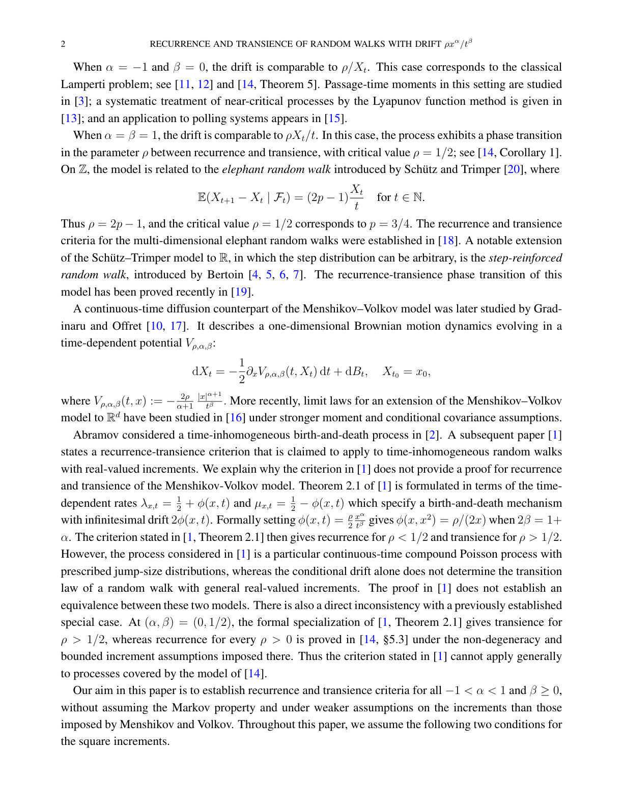
<figcaption class="paper-figure-caption"><b>Fig 1.</b> Low-resolution page preview, page 2</figcaption>
</figure>
<figure class="paper-figure-card">
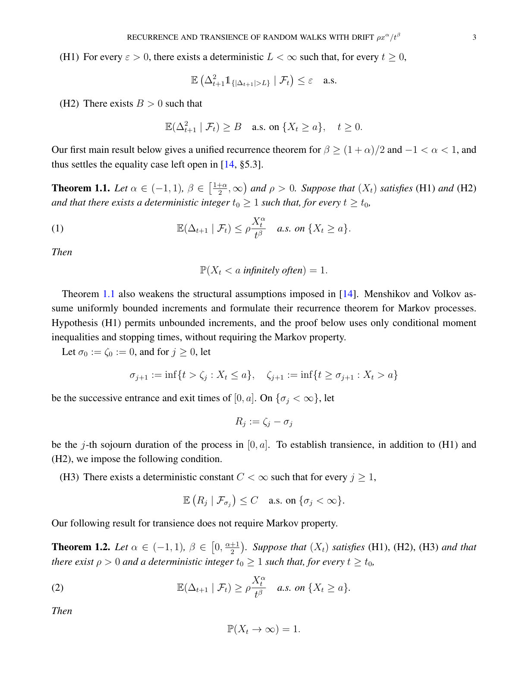
<figcaption class="paper-figure-caption"><b>Fig 2.</b> Low-resolution page preview, page 3</figcaption>
</figure>
<figure class="paper-figure-card">
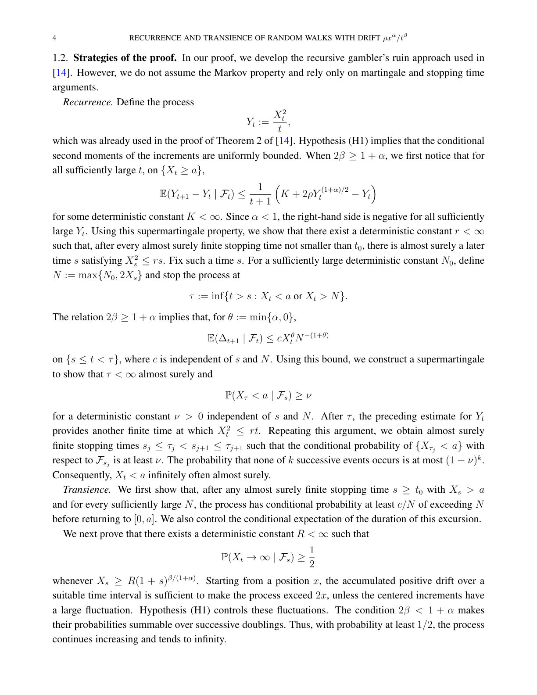
<figcaption class="paper-figure-caption"><b>Fig 3.</b> Low-resolution page preview, page 4</figcaption>
</figure>
<figure class="paper-figure-card">
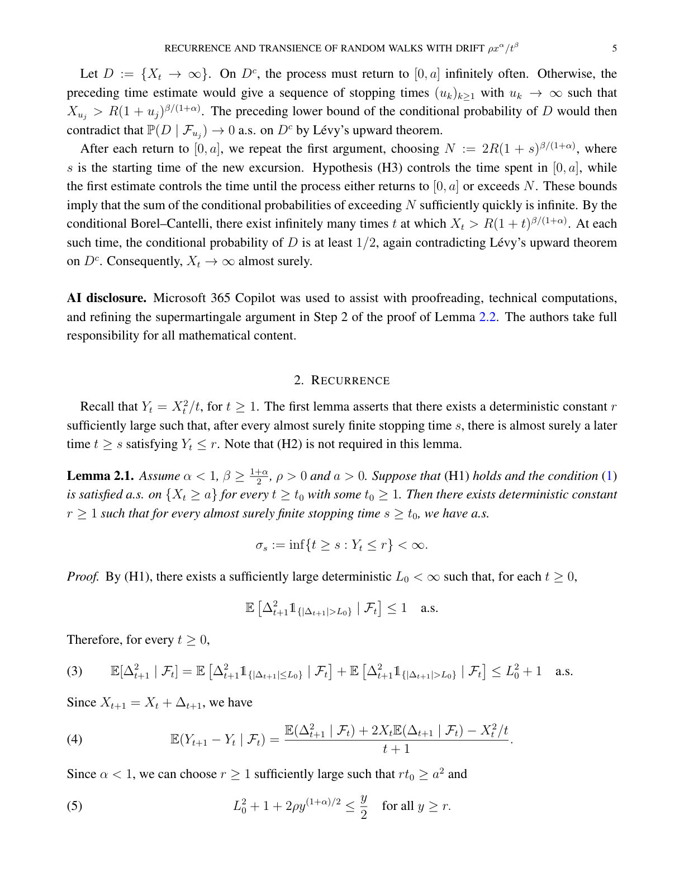
<figcaption class="paper-figure-caption"><b>Fig 4.</b> Low-resolution page preview, page 5</figcaption>
</figure>
<figure class="paper-figure-card">
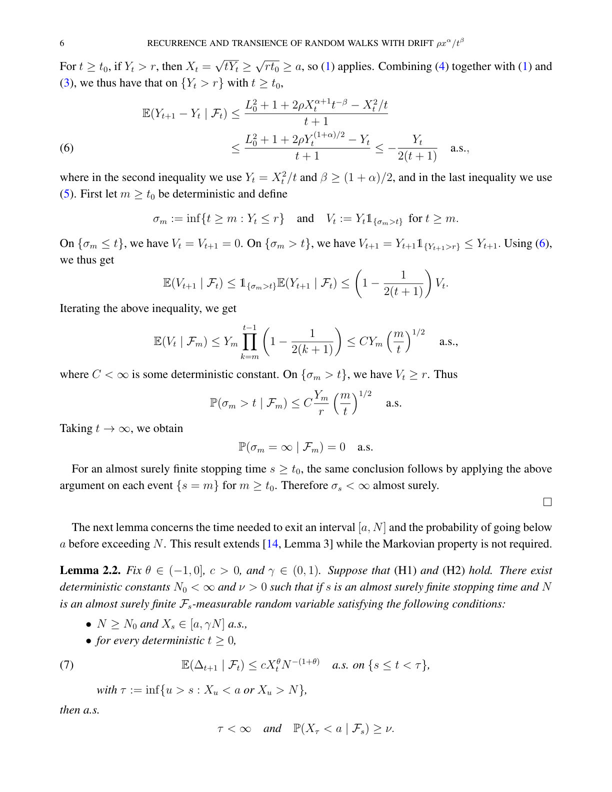
<figcaption class="paper-figure-caption"><b>Fig 5.</b> Low-resolution page preview, page 6</figcaption>
</figure>
</div>

<p><strong>Summary.</strong> This paper rigorously analyzes the recurrence and transience of a random walk whose drift term is time and position-dependent ($
ho x^\alpha/t^eta$). By employing advanced stochastic methods like martingale theory, the authors establish complete classification criteria for the process's long-term behavior under weaker assumptions than previously required. This provides a powerful mathematical tool for understanding diffusion processes in complex, non-stationary environments.</p>
<p><strong>Why it may be interesting.</strong> While the core subject is random walk theory, the rigorous mathematical techniques involving martingale analysis and boundary crossing probabilities are highly relevant to analyzing non-equilibrium dynamics and stochastic processes in condensed matter physics.</p>
<details>
<summary>Detailed structure</summary>
<p><strong>Main problem.</strong> The paper determines the recurrence or transience of a random walk process whose conditional drift depends on both time and position in the form $
ho x^\alpha/t^eta$.</p>
<p><strong>Main result.</strong> It establishes comprehensive recurrence and transience criteria for the process across various parameter regimes of $\alpha$ and $eta$, improving upon previous results by weakening assumptions.</p>
<p><strong>Method.</strong> The analysis employs martingale theory, supermartingale arguments, and the construction of specific stopping times to analyze the long-term behavior of the process.</p>
<p><strong>Model / system.</strong> The model is a discrete-time, $\mathbb{R}^+$-valued random walk $(X_t)_{t\in\mathbb{Z}^+}$ whose conditional drift is governed by the term $
ho x^\alpha/t^eta$. The analysis focuses on the process's tendency to return to a bounded region or escape to infinity.</p>
<p><strong>Key observables.</strong> Recurrence (hitting a point infinitely often) and Transience (diverging to infinity), analyzed via the process's position $X_t$ and related quantities like $Y_t = X_t^2/t$.</p>
<p><strong>Important parameters / regimes.</strong> The parameters are $\alpha$ and $eta$ governing the drift, with critical regimes defined by $2eta - \alpha = 1$ and the general scope being $-1 < \alpha < 1$ and $eta \ge 0$.</p>
<p><strong>Assumptions / limitations.</strong> The proofs rely on hypotheses regarding the boundedness of conditional second moments of increments (H1) and lower bounds on these moments (H2), and the process is analyzed without assuming the Markov property.</p>
<p><strong>Paper structure.</strong> The paper develops the argument by first establishing recurrence criteria using supermartingale properties (Theorem 1.1), followed by proving transience criteria using bounds on hitting probabilities and constructing sequences of stopping times (Theorem 1.2).</p>
</details>
<details>
<summary>Abstract</summary>
<p>Menshikov and Volkov [Electron. J. Probab. 13 (2008)] studied recurrence and transience of a class of Markovian random walks on $\mathbb R_+$ whose conditional drift depends on both time and position and is of order $ρx^αt^{-β}$ with $ρ>0$. The case on the critical line $2β-α=1$, with $α\in(-1,1)\setminus\{0\}$, remained open. We prove recurrence in this remaining case. Furthermore, we establish recurrence and transience criteria that complete the classification for $-1<α<1$ and $β\ge 0$, without assuming the Markov property and under weaker assumptions on the increments than those imposed by Menshikov and Volkov.</p>
</details>
<p><sub><a href="#top">↑ back to top</a></sub></p>

<p><a id="paper-2609.11336"></a></p>
<h3 id="universal-sampling-of-spin-systems-across-quenched-disorder"><a href="http://arxiv.org/abs/2609.11336v1">Universal sampling of spin systems across quenched disorder</a></h3>
<p><strong>Authors:</strong> Jing Liu, Yeyuan Wu, Ying Tang, Pan Zhang<br>
<strong>Type:</strong> theory · <strong>Category:</strong> disordered systems and neural networks · <strong>PDF:</strong> <a href="https://arxiv.org/pdf/2609.11336v1">https://arxiv.org/pdf/2609.11336v1</a><br>
<strong>Analysis basis:</strong> full PDF text, analyzed in chunks
<strong>Topic relevance:</strong> <code>Keldysh / 2PI / non-Gaussian methods</code> <strong>2/5</strong> · <code>analog quantum simulation</code> <strong>2/5</strong> · <code>methods for driven-dissipative</code> <strong>2/5</strong></p>
<div class="figure-strip-hint">↔ Scroll figures horizontally</div>
<div class="paper-figures-scroll">
<figure class="paper-figure-card">
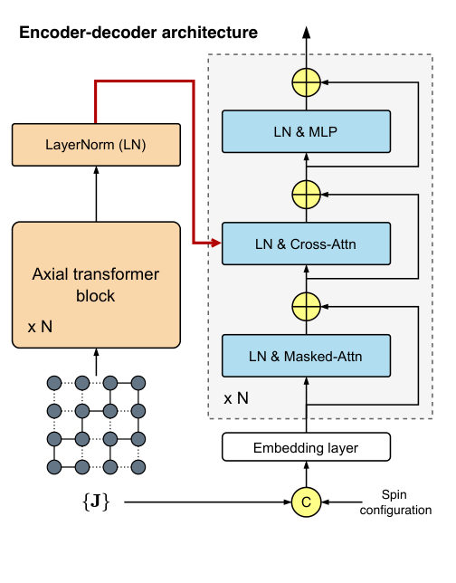
<figcaption class="paper-figure-caption"><b>Fig 1.</b> FIG. 1. Conceptual overview of the disorder-conditioned neural Boltzmann sampling framework. Left: The encoder maps the coupling matrix {J} to per-site embeddings {hi} through N axial transformer blocks, executing once per dis- order realization. Right: The autoregressive decoder gener- ates spin configurations patch by patch. Each patch token concatenates the spin embedding and local coupling features, then is updated via causal masked self-attention and cross- attention with {hi} to parameterize the conditional distribu- tion qθ(s|J).</figcaption>
</figure>
<figure class="paper-figure-card">
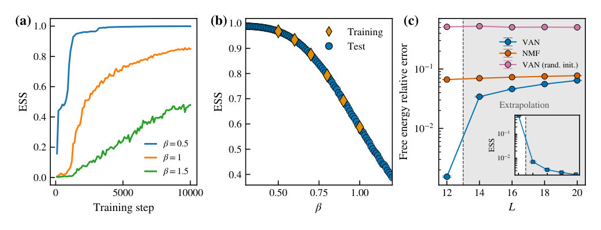
<figcaption class="paper-figure-caption"><b>Fig 2.</b> FIG. 2. Performance on the 2D Edwards-Anderson model with open boundary conditions (L = 12). (a) Training dynamics. The normalized effective sample size (ESS) is evaluated on a fixed validation set (20 realizations) during training for bimodal couplings. (b) Thermal generalization. By conditioning the encoder on Kij = βJij, a model trained on discrete β values seamlessly interpolates and extrapolates to unseen continuous thermal regimes for Gaussian couplings without retraining. (c) Extrapolation over system size. The model is trained on L = 12 and evaluated on L = {12, 14, 16, 18, 20} (gray shading marks the extrapolation regime L &gt; 12), compared with naive mean-field (NMF) and a randomly...</figcaption>
</figure>
<figure class="paper-figure-card">
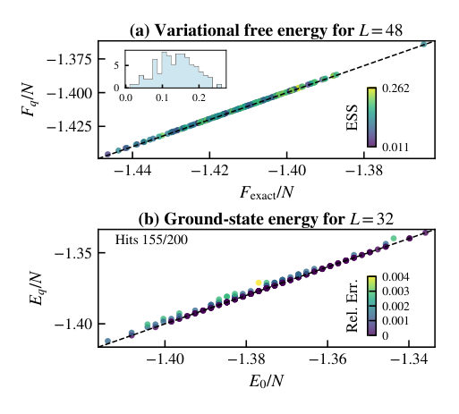
<figcaption class="paper-figure-caption"><b>Fig 3.</b> FIG. 3. Results obtained via curriculum training, where the model is trained sequentially on system sizes L ∈ {8, 12, 16, 24, 32, 40, 48}, each stage warm-started from the converged weights of the previous size. (a) Variational free en- ergies benchmarked against exact Kac-Ward solutions across an independent test set (200 realizations) for Gaussian dis- order at L = 48, β = 1.0. (b) Ground-state search for bi- modal couplings at L = 32 via variational annealing from the curriculum-trained model, showing the minimum energy found versus the exact ground-state energy obtained by [43].</figcaption>
</figure>
<figure class="paper-figure-card">
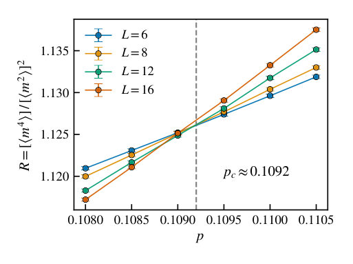
<figcaption class="paper-figure-caption"><b>Fig 4.</b> FIG. 4. Quenched-averaged Binder cumulant U = [⟨m4⟩]/[⟨m2⟩]2 in the 2D random-bond Ising model as a func- tion of the antiferromagnetic bond probability p for various system sizes L. Periodic boundary conditions are adopted to suppress finite-size effects. The curves cross near the expected multicritical Nishimori point p ≈0.1092. For each point, ob- servables are computed via importance sampling across 106</figcaption>
</figure>
<figure class="paper-figure-card">

<figcaption class="paper-figure-caption"><b>Fig 5.</b> Fig. 3(b), this annealed network rapidly generates high- quality ground-state candidates for novel instances, of-</figcaption>
</figure>
</div>

<p><strong>Summary.</strong> This paper presents a novel, amortized neural variational framework using Transformers to calculate thermodynamic properties of disordered spin systems. By training once on the disorder ensemble rather than per realization, it overcomes the prohibitive computational cost of traditional methods. This breakthrough enables accurate, scalable simulations of complex, frustrated many-body systems previously inaccessible to variational inference.</p>
<p><strong>Why it may be interesting.</strong> While focused on classical spin systems, the methodology of using deep generative models (Transformers) to efficiently sample complex, high-dimensional probability distributions conditioned on system parameters (disorder) is highly relevant for simulating quantum many-body states or quantum field theories where disorder is present.</p>
<details>
<summary>Detailed structure</summary>
<p><strong>Main problem.</strong> The primary challenge is evaluating quenched thermodynamic observables in disordered spin systems, which requires averaging over the disorder realization itself, a task difficult for standard variational methods.</p>
<p><strong>Main result.</strong> The authors introduce a universal neural variational framework that amortizes inference across the entire disorder ensemble, allowing for zero-shot sampling on unseen disorder realizations.</p>
<p><strong>Method.</strong> They employ an encoder-decoder Transformer architecture where the encoder processes the disorder couplings $\{J\}$ to generate site embeddings, which condition a causal Transformer decoder to sample the spin configuration $s$.</p>
<p><strong>Model / system.</strong> The work focuses on disordered spin systems, specifically the 2D Edwards-Anderson model and the random-bond Ising model, governed by a Hamiltonian involving quenched random couplings $J_{ij}$.</p>
<p><strong>Key observables.</strong> Variational free energy, Binder cumulant crossings, and ground-state energies.</p>
<p><strong>Important parameters / regimes.</strong> Inverse temperature ($eta$), system size ($L$), and the nature of the disorder (bimodal vs. Gaussian couplings).</p>
<p><strong>Assumptions / limitations.</strong> The framework assumes that the disorder couplings can be processed by the encoder to create a universal representation $\{h_i\}$ that governs the sampling process.</p>
<p><strong>Figures summary.</strong> Figures illustrate the conceptual flow of the disorder-conditioned neural Boltzmann sampling framework, showing training dynamics, thermal generalization, and extrapolation across system sizes.</p>
<p><strong>Paper structure.</strong> The paper first establishes the computational bottleneck of per-instance training for disordered systems. It then introduces the amortized Transformer architecture, details its training on various disorder types and temperatures, and validates its performance by calculating key physical observables like the Binder cumulant.</p>
</details>
<details>
<summary>Abstract</summary>
<p>Statistical physics extracts macroscopic laws by averaging over the many microscopic degrees of freedom of a system. Disordered systems demand a second and far harder average, one over the quenched randomness itself. The classic analytical routes, the replica and cavity methods, become uncontrolled outside mean-field or tree-like limits, and conventional numerical algorithms like parallel tempering require expensive, independent equilibration for every disorder realization. In this work, we introduce a universal neural variational framework that amortizes inference across the disorder ensemble, eliminating both the need for per-instance Markov chain equilibration and the cost of retraining instance-specific variational ansatzes. Built on an encoder-decoder Transformer architecture, after training once, it produces an explicit approximation to the Boltzmann distribution given previously unseen disorder realizations without further optimization. We validate this framework on 2D Edwards-Anderson models, and apply it to the random-bond Ising model, successfully capturing the Binder cumulant crossings near the Nishimori multicritical point. These results shift the object of variational inference from the single instance to the disorder ensemble, opening a route to frustrated many-body systems where instance-by-instance computation is prohibitive.</p>
</details>
<p><sub><a href="#top">↑ back to top</a></sub></p>

<p><a id="paper-2609.11350"></a></p>
<h3 id="from-analytic-structure-to-quantum-complexity-walsh-pauli-representations-of-continuum-operators"><a href="http://arxiv.org/abs/2609.11350v1">From Analytic Structure to Quantum Complexity: Walsh-Pauli Representations of Continuum Operators</a></h3>
<p><strong>Authors:</strong> Raphael De Sousa, Partha Nandi, Francesco Petruccione<br>
<strong>Type:</strong> theory · <strong>Category:</strong> quantum information and computing · <strong>PDF:</strong> <a href="https://arxiv.org/pdf/2609.11350v1">https://arxiv.org/pdf/2609.11350v1</a><br>
<strong>Analysis basis:</strong> full PDF text, analyzed in chunks
<strong>Topic relevance:</strong> <code>analog quantum simulation</code> <strong>2/5</strong> · <code>quantum measurements</code> <strong>2/5</strong> · <code>Keldysh / 2PI / non-Gaussian methods</code> <strong>1/5</strong></p>
<div class="figure-strip-hint">↔ Scroll figures horizontally</div>
<div class="paper-figures-scroll">
<figure class="paper-figure-card">
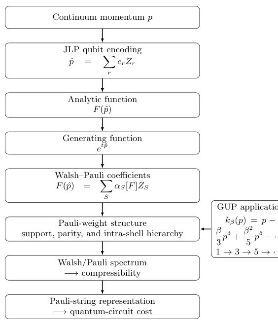
<figcaption class="paper-figure-caption"><b>Fig 1.</b> FIG. 1. Schematic overview of the continuum-to-qubit con- struction developed in this work. The JLP encoding maps the continuum momentum to a binary qubit operator. An analytic function of the momentum operator is decomposed through a generating-function construction into Walsh–Pauli coefficients. The resulting spectrum determines the Pauli- weight structure and its compressibility, which are directly relevant for Pauli-string implementation and quantum-circuit resources. The quadratic GUP provides a concrete applica- tion of the general framework.</figcaption>
</figure>
<figure class="paper-figure-card">
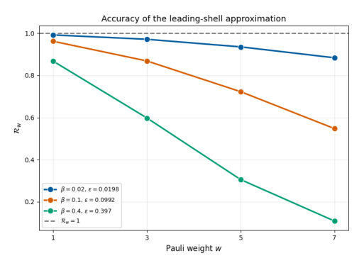
<figcaption class="paper-figure-caption"><b>Fig 2.</b> FIG. 3. Ratio Rw = W exact w /W LO w defined in Eq. (100). Values near unity indicate dominance of the leading Taylor contribution to the corresponding Pauli-weight shell.</figcaption>
</figure>
<figure class="paper-figure-card">
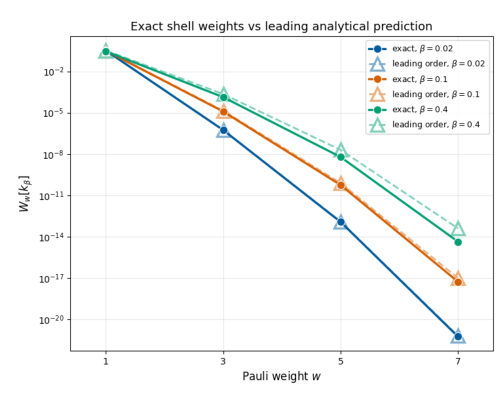
<figcaption class="paper-figure-caption"><b>Fig 3.</b> FIG. 2. Exact Walsh shell weights of the quadratic-GUP operator compared with the leading-order analytical predic- tion Eq. (98) for nq = 8 and pmax ≈0.996. The agreement is excellent in the weak-deformation regime, while deviations appear as higher Taylor orders become appreciable.</figcaption>
</figure>
<figure class="paper-figure-card">
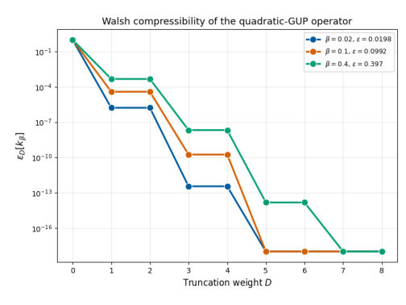
<figcaption class="paper-figure-caption"><b>Fig 4.</b> FIG. 4. Discarded Walsh spectral fraction εD[kβ] = 1 − C(D), defined in Eqs. (101) and (102), as a function of the maximum retained Pauli weight D. Increasing the deforma- tion transfers spectral weight into higher-weight sectors and therefore increases the Pauli locality required at fixed accu- racy.</figcaption>
</figure>
<figure class="paper-figure-card">
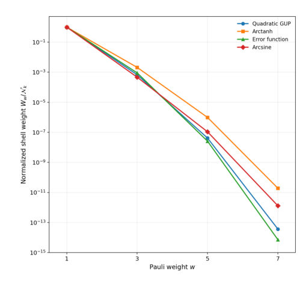
<figcaption class="paper-figure-caption"><b>Fig 5.</b> FIG. 5. Normalized Walsh shell weights for the representa- tive non-polynomial analytic deformations of Table II, evalu- ated on the same JLP momentum lattice at fixed deformation strength ϵ = βp2 max. All models populate only odd Pauli- weight sectors, reflecting their common parity, while the rel- ative distribution of spectral weight among the allowed shells depends on the analytic form of the deformation. The values shown are nq = 8, ϵ = 0.5 and pmax = 1.</figcaption>
</figure>
</div>

<p><strong>Summary.</strong> This work develops a systematic, analytical framework to translate the structure of continuum quantum operators into the discrete language of qubits using Walsh-Pauli representations. By employing generating functions, the authors determine the spectrum and resource cost associated with operators like the momentum operator, even when subjected to nonlinear deformations such as GUP kinematics. This offers a powerful preprocessing step for designing efficient quantum simulations.</p>
<p><strong>Why it may be interesting.</strong> It provides a rigorous, analytical tool to estimate the quantum resources needed to simulate complex physical Hamiltonians (like those involving GUP) by analyzing the spectral structure of their momentum components.</p>
<details>
<summary>Detailed structure</summary>
<p><strong>Main problem.</strong> The paper addresses how the structure of a continuum operator, such as the momentum operator, is faithfully represented and characterized within a finite qubit register.</p>
<p><strong>Main result.</strong> A generating-function framework is developed to analytically determine the Walsh-Pauli spectrum of analytic functions of the JLP momentum operator, revealing exact support and parity selection rules.</p>
<p><strong>Method.</strong> The core method involves mapping the continuum operator to a qubit-encoded operator, then using a generating function formalism to extract the Walsh-Pauli coefficients of the resulting function.</p>
<p><strong>Model / system.</strong> The model centers on the Jordan-Lee-Preskill (JLP) construction, which discretizes continuum degrees of freedom onto a finite qubit register. A controlled application is the Generalized Uncertainty Principle (GUP) kinematics, treated as a nonlinear deformation of momentum.</p>
<p><strong>Key observables.</strong> Walsh-Pauli spectrum, Pauli-weight structure, Walsh compressibility, and estimated quantum circuit resource costs (e.g., CNOT gates).</p>
<p><strong>Important parameters / regimes.</strong> The number of qubits ($n_q$) defining the finite register size, and the deformation parameters characterizing the GUP.</p>
<p><strong>Assumptions / limitations.</strong> The analysis is restricted to diagonal functions of a single JLP momentum register, and the method provides an upper bound for circuit costs.</p>
<p><strong>Figures summary.</strong> Figure 1 schematically illustrates the entire process flow: continuum momentum $
ightarrow$ JLP qubit encoding $
ightarrow$ Analytic function $
ightarrow$ Walsh-Pauli coefficients $
ightarrow$ Spectrum/Resources.</p>
<p><strong>Paper structure.</strong> The paper builds from establishing the continuum-to-qubit mapping, developing the generating-function formalism for the spectrum, deriving selection rules (support/parity), and finally applying the framework to analyze physical deformations like GUP kinematics.</p>
</details>
<details>
<summary>Abstract</summary>
<p>How does continuum operator structure appear in a finite qubit register? We address this question for analytic functions of diagonal operators represented in a binary basis, focusing on the Jordan--Lee--Preskill (JLP) momentum operator, by developing an operator-level generating-function framework for their Walsh-Pauli spectra. The construction determines the spectrum analytically and reveals exact support and parity selection rules, together with a nontrivial intra-shell hierarchy induced by the binary encoding. This provides a systematic characterization of Walsh compressibility and its relation to Pauli locality. As a controlled application, we consider generalized uncertainty-principle (GUP) kinematics as a tunable nonlinear odd deformation of momentum, showing how higher-order momentum terms redistribute spectral weight into progressively higher Pauli-weight sectors</p>
</details>
<p><sub><a href="#top">↑ back to top</a></sub></p>

<p><a id="paper-2609.11926"></a></p>
<h3 id="quantifying-symmetry-breaking"><a href="http://arxiv.org/abs/2609.11926v1">Quantifying Symmetry Breaking</a></h3>
<p><strong>Authors:</strong> Koji Yamaguchi, Hiroyasu Tajima<br>
<strong>Type:</strong> theory · <strong>Category:</strong> statistical mechanics · <strong>PDF:</strong> <a href="https://arxiv.org/pdf/2609.11926v1">https://arxiv.org/pdf/2609.11926v1</a><br>
<strong>Analysis basis:</strong> full PDF text, analyzed in chunks
<strong>Topic relevance:</strong> <code>quantum measurements</code> <strong>2/5</strong> · <code>Keldysh / 2PI / non-Gaussian methods</code> <strong>1/5</strong> · <code>analog quantum simulation</code> <strong>1/5</strong></p>
<div class="figure-strip-hint">↔ Scroll figures horizontally</div>
<div class="paper-figures-scroll">
<figure class="paper-figure-card">
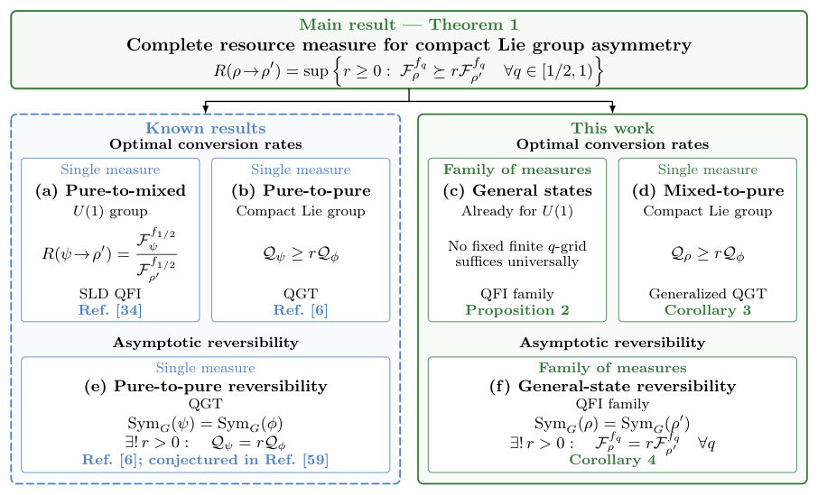
<figcaption class="paper-figure-caption"><b>Fig 1.</b> FIG. 1. Single measure versus a family of measures: conversion rates and reversibility. The upper box gives the complete conversion-rate formula of Theorem 1 under the symmetry-subgroup inclusion condition. Blue dashed and green solid frames distinguish known results from this work. Optimal conversion rates: (a) U(1) pure-to-mixed formation is determined by the ratio of SLD QFIs [34]; (b) pure-to-pure conversion is characterized by a single QGT [6], which unifies earlier pure- state conversion results [33–35, 47]; (c) the general conversion law cannot be reduced to a state-independent fixed finite set of q values (Proposition 2); and (d) a pure target reduces the characterization to a...</figcaption>
</figure>
<figure class="paper-figure-card">
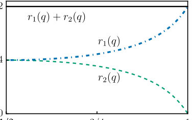
<figcaption class="paper-figure-caption"><b>Fig 2.</b> FIG. 2. Asymmetry activation via QFI complemen-</figcaption>
</figure>
</div>

<p><strong>Summary.</strong> This work develops a comprehensive resource theory approach to quantify symmetry breaking in mixed quantum states. It establishes that the optimal conversion rate is governed not by a single measure, but by an entire continuous family of Quantum Fisher Information matrices. This reveals a fundamental difference between pure-state and mixed-state resource quantification.</p>
<p><strong>Why it may be interesting.</strong> It provides a rigorous, quantitative framework for understanding how symmetry constraints dictate the fundamental limits of quantum information processing, which has implications for characterizing non-equilibrium processes in many-body systems.</p>
<details>
<summary>Detailed structure</summary>
<p><strong>Main problem.</strong> The paper aims to provide a complete, operational characterization for quantifying symmetry breaking in general mixed quantum states within the i.i.d. asymptotic limit.</p>
<p><strong>Main result.</strong> It establishes a single-letter formula for the optimal conversion rate between arbitrary mixed states, determined by an entire one-parameter family of Quantum Fisher Information (QFI) matrices.</p>
<p><strong>Method.</strong> The analysis uses quantum resource theories, extending quantum local asymptotic normality (QLAN) to complex unitary models and characterizing convertibility via the continuous QFI family.</p>
<p><strong>Model / system.</strong> The study concerns quantum systems in finite-dimensional Hilbert spaces subjected to compact Lie group symmetries, analyzing the conversion of many copies of input states ($
ho^{\otimes n}$) to output states ($
ho'^{\otimes m}$).</p>
<p><strong>Key observables.</strong> Asymmetry measure, Quantum Fisher Information (QFI) matrices (interpolating SLD and RLD), and the generalized quantum geometric tensor (QGT).</p>
<p><strong>Important parameters / regimes.</strong> The asymptotic regime (i.i.d.), the parameter $q$ defining the QFI family, and the group structure of the symmetry $G$.</p>
<p><strong>Assumptions / limitations.</strong> The analysis is restricted to the i.i.d. asymptotic regime, and the proof relies on extending QLAN to arbitrary rank unitary models.</p>
<p><strong>Figures summary.</strong> Figure 1 summarizes the findings, contrasting the single-measure characterization for pure-state conversion (using QGT) with the full QFI family required for general mixed-state conversion.</p>
<p><strong>Paper structure.</strong> The paper builds from the general problem of resource quantification, develops the necessary mathematical tools (like extended QLAN), derives the single-letter formula using the continuous QFI family, and then specializes the results to pure-state distillation and asymmetry activation.</p>
</details>
<details>
<summary>Abstract</summary>
<p>Quantifying properties of quantum states through the limits of their manipulation is a central goal of quantum resource theories. For symmetry breaking, the quantum geometric tensor governs asymptotic pure-state conversion, but a complete characterization for general mixed states has remained elusive.   Here we fully resolve this problem for finite-dimensional systems under compact Lie group symmetries in the i.i.d. asymptotic regime. Specifically, we establish a single-letter formula for the optimal conversion rate between arbitrary states, with vanishing trace-distance error, in the resource theory of asymmetry. The rate is determined by a one-parameter family of quantum Fisher information (QFI) matrices that interpolates between the symmetric- and right-logarithmic-derivative QFIs. No state-independent finite subset of this family suffices in general, even for $U(1)$ symmetry, revealing a qualitative distinction from pure-state conversion. Our formula further yields an exact formula for pure-state distillation rates in terms of the generalized quantum geometric tensor, characterizes asymptotically reversible interconversion, and identifies bound asymmetry for quantum clocks. Complementarity among different members of the QFI family also uncovers an activation mechanism for quantum clocks.   Our proof relies on two developments of independent interest. First, we extend quantum local asymptotic normality to unitary models with arbitrary rank and spectral degeneracy. Second, we characterize convertibility between quantum Gaussian shift models in terms of the same one-parameter family of QFIs. Together, these results provide an operational characterization of symmetry breaking for general quantum states in the i.i.d. asymptotic regime and reveal how distinct QFI constraints give rise to irreversibility and activation.</p>
</details>
<p><sub><a href="#top">↑ back to top</a></sub></p>

<p><a id="paper-2609.10967"></a></p>
<h3 id="timelike-entanglement-from-spacetime-density-matrices-a-lattice-realization"><a href="http://arxiv.org/abs/2609.10967v1">Timelike Entanglement from Spacetime Density Matrices: A Lattice Realization</a></h3>
<p><strong>Authors:</strong> Hao-yu Wang, Wu-zhong Guo<br>
<strong>Type:</strong> theory · <strong>Category:</strong> statistical mechanics · <strong>PDF:</strong> <a href="https://arxiv.org/pdf/2609.10967v1">https://arxiv.org/pdf/2609.10967v1</a><br>
<strong>Analysis basis:</strong> full PDF text, analyzed in chunks
<strong>Topic relevance:</strong> <code>Keldysh / 2PI / non-Gaussian methods</code> <strong>2/5</strong> · <code>methods for driven-dissipative</code> <strong>2/5</strong></p>
<div class="figure-strip-hint">↔ Scroll figures horizontally</div>
<div class="paper-figures-scroll">
<figure class="paper-figure-card">
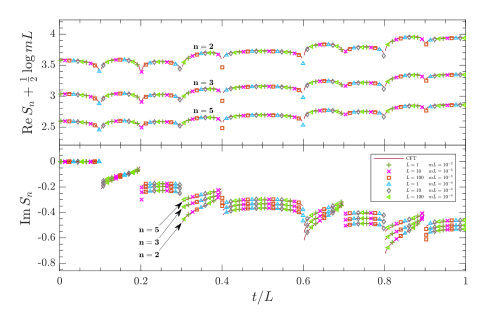
<figcaption class="paper-figure-caption"><b>Fig 1.</b> FIG. 2. R´enyi entropies for periodic boundary conditions as functions of t/L, with N = 5000 lattice sites in total and (a, b, c, d)/L = (0.4, 0.5, 0.6, 0.8). An additive shift is applied to the real part to remove the universal divergent term.</figcaption>
</figure>
<figure class="paper-figure-card">
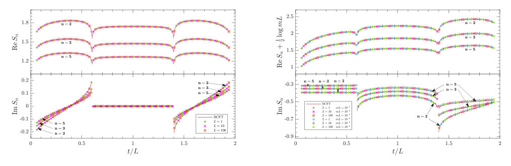
<figcaption class="paper-figure-caption"><b>Fig 2.</b> FIG. 3. R´enyi entropies for DD (left) and NN (right) boundary conditions as functions of t/L, with N = 5000 lattice sites in total and a/L = 0.3. An additive shift is applied to the real part of the NN result to remove the universal divergent term.</figcaption>
</figure>
<figure class="paper-figure-card">
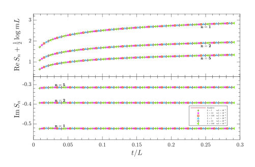
<figcaption class="paper-figure-caption"><b>Fig 3.</b> FIG. 4. R´enyi and von Neumann entropies for the NN bound- ary conditions as functions of t/L, with N = 5000 lattice sites in total and a/L = 0.3. An additive shift is applied to the real part to remove the universal divergent term.</figcaption>
</figure>
<figure class="paper-figure-card">
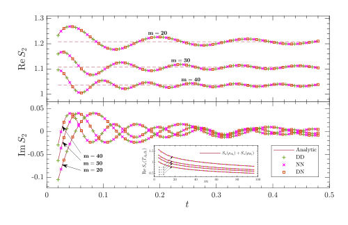
<figcaption class="paper-figure-caption"><b>Fig 4.</b> FIG. 5. The main panels show the R´enyi entropies at several masses for DD, NN, and DN boundary conditions. The dashed lines denote the reference values Sn(ρA0)+Sn(ρBt). The inset shows the mass dependence of Re Sn(TA0Bt) and Sn(ρA0) + Sn(ρBt) at t = 0.45. The calculations use N = 5000 lattice sites in total, L = 1, and a = 0.3.</figcaption>
</figure>
</div>

<p><strong>Summary.</strong> This work establishes a lattice realization for quantifying timelike entanglement in QFT using spacetime density matrices. By analyzing the spectrum of the reduced density matrix, the authors show that entanglement entropy moments precisely match predictions from Lorentzian twist-operator correlation functions. This provides a powerful, microscopic tool for studying quantum correlations across time separations.</p>
<p><strong>Why it may be interesting.</strong> The rigorous lattice foundation for timelike entanglement provides a concrete, computable framework for understanding non-local quantum correlations in time, which is crucial for understanding dynamics in open or time-dependent quantum systems.</p>
<details>
<summary>Detailed structure</summary>
<p><strong>Main problem.</strong> The paper investigates the concept of timelike entanglement in Quantum Field Theory (QFT) by analyzing reduced spacetime density matrices, extending entanglement measures beyond standard equal-time spatial cuts.</p>
<p><strong>Main result.</strong> The authors provide a microscopic lattice realization for timelike entanglement, showing that Rényi entropy moments derived from the reduced density matrix match Lorentzian twist-operator correlation functions, even in regimes where reality is not guaranteed by causal disconnection.</p>
<p><strong>Method.</strong> The analysis uses Gaussian diagonalization techniques applied to the generally non-Hermitian reduced spacetime density matrix, determining its spectrum via a characteristic polynomial, and relating its moments to correlation functions using the real-time replica construction.</p>
<p><strong>Model / system.</strong> The study is performed on a free real scalar field, modeled on a lattice of coupled harmonic oscillators. The formalism is extended to analyze boundary effects (Periodic, Dirichlet, Neumann) and massive integrable QFTs.</p>
<p><strong>Key observables.</strong> Reduced spacetime density matrix ($T_{A_0 B_t}$), Rényi entropy ($S_n$), von Neumann entropy ($S$), and Lorentzian twist-operator correlation functions (four-point and two-point functions).</p>
<p><strong>Important parameters / regimes.</strong> Time separation ($t$), lattice size ($L$), mass scale ($\xi \sim m^{-1}$), and boundary conditions (DD, NN, PBC).</p>
<p><strong>Assumptions / limitations.</strong> The analysis is initially restricted to the vacuum state of a free scalar field, and the methods rely on extending Gaussian diagonalization to non-Hermitian operators.</p>
<p><strong>Figures summary.</strong> Figures illustrate the schematic setup for the reduced density matrix on a circle and a strip, and show the evolution of Rényi entropies for various boundary conditions (DD, NN, DN) as a function of time separation.</p>
<p><strong>Paper structure.</strong> The paper progresses by defining the reduced spacetime density matrix, calculating its spectrum and Rényi moments, establishing the connection to Lorentzian twist-operator correlators, and finally testing this identification against various boundary conditions and limits.</p>
</details>
<details>
<summary>Abstract</summary>
<p>We investigate timelike entanglement in quantum field theory using spacetime density matrices and provide a microscopic lattice realization. For a two-dimensional free real scalar field, we extend Gaussian diagonalization methods to the generally non-Hermitian reduced spacetime density matrix and determine its complete nonzero spectrum in the generic regular case, together with all integer Rényi moments. The real-time replica construction identifies these moments with Lorentzian branch-point twist-operator correlation functions. We test this identification against the full four-point function on a circle, boundary two-point functions with Dirichlet and Neumann boundary conditions, and massive form-factor predictions, finding quantitative agreement in both magnitude and phase across distinct causal regimes. The boundary setup exhibits a finite causally connected window in which every integer Rényi entropy is real, showing that reality is not equivalent to causal disconnection. These results provide a microscopic lattice foundation for timelike entanglement and for Lorentzian twist-operator methods beyond equal-time regions.</p>
</details>
<p><sub><a href="#top">↑ back to top</a></sub></p>

<p><a id="paper-2609.10973"></a></p>
<h3 id="measuring-chiral-phonons"><a href="http://arxiv.org/abs/2609.10973v1">Measuring chiral phonons</a></h3>
<p><strong>Authors:</strong> Rahul Rao, Hanyu Zhu, Nicholas Kotov, Thuc T. Mai, Maria F. Muñoz, Dali Sun, Jun Liu, Wonjin Choi, Renee R. Frontiera, Angela R. H. Hight Walker<br>
<strong>Type:</strong> both · <strong>Category:</strong> other · <strong>PDF:</strong> <a href="https://arxiv.org/pdf/2609.10973v1">https://arxiv.org/pdf/2609.10973v1</a><br>
<strong>Analysis basis:</strong> full PDF text, analyzed in chunks
<strong>Topic relevance:</strong> <code>quantum optics experiment</code> <strong>2/5</strong> · <code>quantum measurements</code> <strong>1/5</strong></p>
<div class="figure-strip-hint">↔ Scroll figures horizontally</div>
<div class="paper-figures-scroll">
<figure class="paper-figure-card">
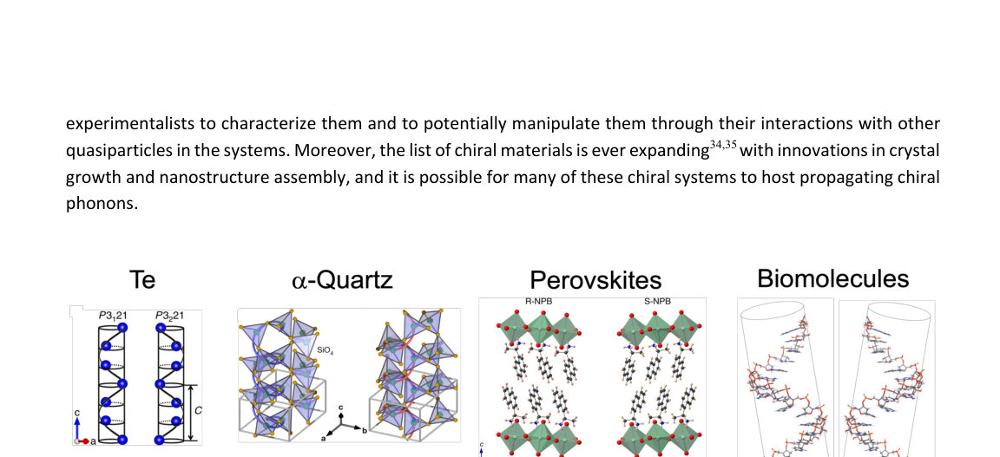
<figcaption class="paper-figure-caption"><b>Fig 1.</b> Figure 1. Examples of left- and right-handed chiral materials hosting chiral phonons. The crystal structures going</figcaption>
</figure>
<figure class="paper-figure-card">
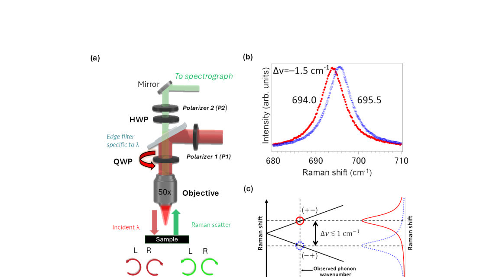
<figcaption class="paper-figure-caption"><b>Fig 2.</b> Figure 2. Circularly polarized Raman spectroscopy of chiral phonons. (a) Typical commercial design of a Raman</figcaption>
</figure>
<figure class="paper-figure-card">
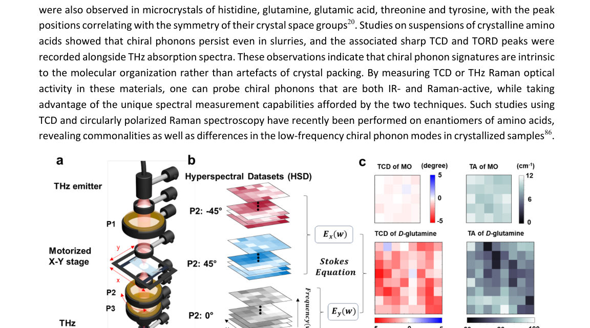
<figcaption class="paper-figure-caption"><b>Fig 3.</b> Figure 3. Practical implementation of TCD and TORD chiroptical spectroscopies. (a) The schematics of the experimental set-up. (b) Schematics of extraction of chiroptical spectra using the Stokes equation. (c) Example of the experimental data for mineral oil (MO) and D-glutamine.</figcaption>
</figure>
<figure class="paper-figure-card">
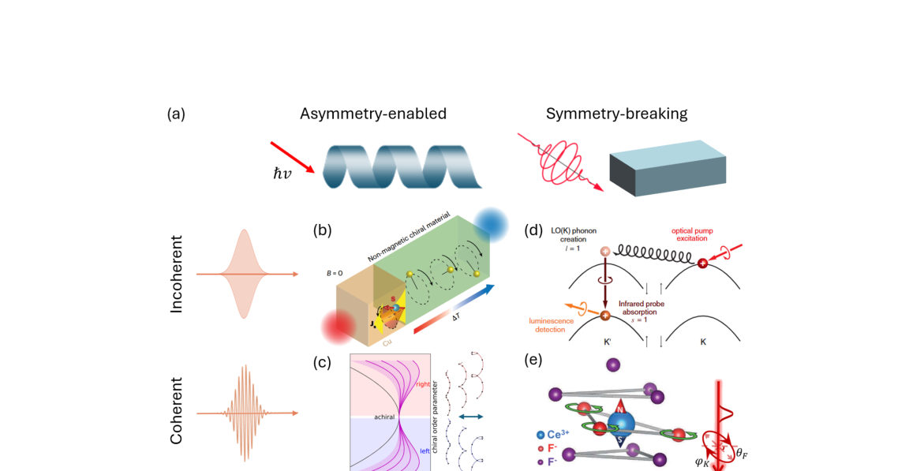
<figcaption class="paper-figure-caption"><b>Fig 4.</b> Figure 4. Generation and detection of non-equilibrium chiral phonons in materials through ultrafast light-</figcaption>
</figure>
</div>

<p><strong>Summary.</strong> This review provides an essential experimental guide for measuring chiral phonons, which are vibrations sensitive to circular polarization. It details advanced spectroscopic techniques like VCD, ROA, and circularly polarized Raman scattering. The work is crucial for harnessing the unique spin-lattice coupling enabled by these phonons in emerging fields like spintronics and quantum information.</p>
<p><strong>Why it may be interesting.</strong> The focus on spin-lattice coupling and the ability to probe chirality using optical methods makes it highly relevant for understanding quantum phenomena in condensed matter systems, bridging optics and lattice dynamics.</p>
<details>
<summary>Detailed structure</summary>
<p><strong>Main problem.</strong> The paper addresses the challenge of experimentally measuring chiral phonons, which are quantized vibrations whose atomic motion breaks improper rotation symmetries.</p>
<p><strong>Main result.</strong> It provides a comprehensive experimental guide detailing various techniques to systematically investigate the properties of chiral phonons across diverse material systems.</p>
<p><strong>Method.</strong> The review synthesizes multiple experimental techniques, including Optical Rotatory Dispersion (ORD), Circular Dichroism (CD), Vibrational Optical Activity (VOA) (VCD/ROA), and circularly polarized Raman spectroscopy.</p>
<p><strong>Model / system.</strong> The study covers chiral and achiral materials, ranging from crystalline solids like $\alpha$-quartz to 2D perovskites and quantum magnets. Chirality can be inherent or induced transiently via interactions with photons or magnons.</p>
<p><strong>Key observables.</strong> Optical rotation, differential absorption (CD), VOA spectra (VCD/ROA), and phonon frequency splitting induced by pseudoangular momentum (PAM).</p>
<p><strong>Important parameters / regimes.</strong> The magnitude of spectroscopic signatures varies greatly across techniques; the coupling between spin and lattice degrees of freedom is key.</p>
<p><strong>Assumptions / limitations.</strong> The primary limitation discussed is the very small signal magnitude associated with VOA measurements, requiring high sensitivity.</p>
<p><strong>Figures summary.</strong> Figures illustrate examples of left- and right-handed chiral materials hosting chiral phonons and schematically show the measurement setup for circularly polarized Raman spectroscopy, including phonon dispersion splitting.</p>
<p><strong>Paper structure.</strong> The paper is structured as a detailed perspective review, first covering general concepts and then systematically detailing steady-state probe techniques, followed by transient time-resolved spectroscopies.</p>
</details>
<details>
<summary>Abstract</summary>
<p>Chiral phonons are quantized vibrations where the atomic motion in a solid breaks improper rotation symmetries. In many cases, chiral phonons possess angular momenta and are therefore selective to circularly polarized light. Both fundamental and applied research efforts on chiral phonons have been gaining increasing attention owing to their importance in a variety of fields including spintronics, spin-selective chemical reactions, thermal transport, quantum information processing and biosensing, where the bi-directional spin-lattice coupling enabled by chiral phonons can be harnessed in new ways, and potentially lead to new functionalities. Thus far, the studies of chiral phonons across diverse materials platforms have evolved largely independently within these fields, but the experimental techniques are often interrelated. In this perspective, we present a detailed description, as well as advantages and disadvantages of the current approaches for experimentally measuring chiral phonons in chiral and achiral materials. We conclude with a discussion of new methods for measuring chiral phonons. Ultimately, this work seeks to offer an experimental guide for systematically investigating the properties of chiral phonons in various materials systems and applications.</p>
</details>
<p><sub><a href="#top">↑ back to top</a></sub></p>

<p><a id="paper-2609.11591"></a></p>
<h3 id="robust-spin-1-haldane-topology-under-itinerant-doping"><a href="http://arxiv.org/abs/2609.11591v1">Robust Spin-1 Haldane Topology under Itinerant Doping</a></h3>
<p><strong>Authors:</strong> Satoshi Nishimoto<br>
<strong>Type:</strong> theory · <strong>Category:</strong> strongly correlated electrons · <strong>PDF:</strong> <a href="https://arxiv.org/pdf/2609.11591v1">https://arxiv.org/pdf/2609.11591v1</a><br>
<strong>Analysis basis:</strong> full PDF text, analyzed in chunks
<strong>Topic relevance:</strong> <code>analog quantum simulation</code> <strong>2/5</strong> · <code>methods for driven-dissipative</code> <strong>1/5</strong></p>
<div class="figure-strip-hint">↔ Scroll figures horizontally</div>
<div class="paper-figures-scroll">
<figure class="paper-figure-card">
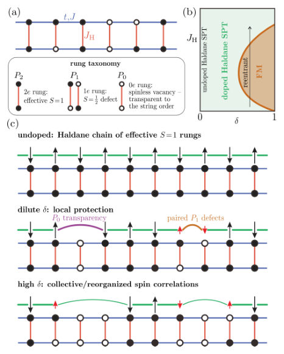
<figcaption class="paper-figure-caption"><b>Fig 1.</b> FIG. 1. (a) Model and local rung taxonomy. Filled (open) circles denote electrons (holes). (b) Schematic evolution of the Haldane spin structure with doping. Black (red) arrows denote S = 1 rung spins (S = 1/2 defects), and green lines indicate the correlated spin backbone. (c) Schematic phase diagram in the (JH, δ) plane.</figcaption>
</figure>
<figure class="paper-figure-card">
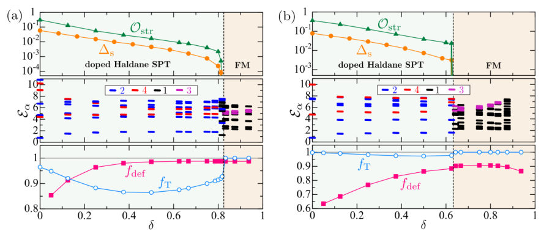
<figcaption class="paper-figure-caption"><b>Fig 2.</b> FIG. 2. Doping evolution at J = 0.4 for (a) JH = 0.5 and (b) JH = 3.0. Top: Ostr and ∆s. Middle: lowest entanglement levels Eα at an inter-rung cut; colors denote multiplicity. Bottom: fdef and fT. Dashed lines mark δc.</figcaption>
</figure>
<figure class="paper-figure-card">
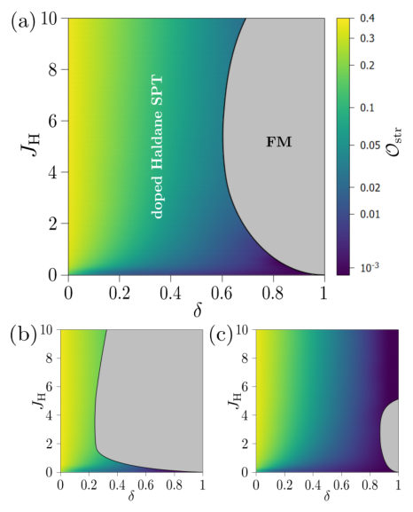
<figcaption class="paper-figure-caption"><b>Fig 3.</b> FIG. 3. Phase diagram in the (JH, δ) plane for (a) J = 0.4, (b) J = 0.1, and (c) J = 1.0. The color scale shows the SOP Ostr in the doped Haldane SPT, while the gray regions denote the FM phase.</figcaption>
</figure>
<figure class="paper-figure-card">
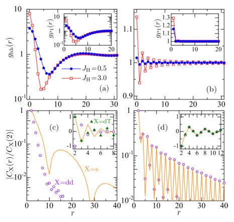
<figcaption class="paper-figure-caption"><b>Fig 4.</b> FIG. 4. Hole and defect-resolved correlations at J = 0.4. (a,b) ghh(r) at δ = 0.05 and 0.5, respectively, for JH = 0.5 and 3.0; the insets show gP1(r). (c,d) |CX(r)|/|CX(2)| for X ∈{s, dd} at JH = 0.5 for the same respective dopings; the insets show CX(r)/|CX(2)| for X ∈{s, dd, dT}.</figcaption>
</figure>
</div>

<p><strong>Summary.</strong> This paper theoretically investigates how the spin-1 Haldane topological phase persists when holes are doped into the system. Using DMRG and Bosonization, the authors map out the phase diagram, showing that the topological order remains robust while the system develops a metallic character. The study reveals complex doping-dependent physics, including the formation of a reentrant ferromagnetic phase at high doping.</p>
<p><strong>Why it may be interesting.</strong> The work provides a detailed theoretical understanding of how topological order (Haldane SPT) can survive and reorganize in the presence of mobile charge carriers, which is crucial for understanding doped quantum magnets and correlated materials.</p>
<details>
<summary>Detailed structure</summary>
<p><strong>Main problem.</strong> The study investigates the robustness and evolution of the spin-1 Haldane symmetry-protected topological (SPT) phase when the system is subjected to itinerant hole doping.</p>
<p><strong>Main result.</strong> The doped Haldane SPT remains stable over a broad doping range, characterized by a metallic low-energy description, and its phase diagram reveals a reentrant ferromagnetic pocket at high doping.</p>
<p><strong>Method.</strong> The research employs advanced numerical techniques, primarily Density-Matrix Renormalization Group (DMRG) calculations, supplemented by Bosonization analysis to characterize the electronic and spin correlations.</p>
<p><strong>Model / system.</strong> The model consists of two t-J chains coupled by a ferromagnetic (FM) Hund exchange interaction, allowing for the study of charge and spin degrees of freedom under doping ($\delta$).</p>
<p><strong>Key observables.</strong> String Order Parameter (SOP), bulk spin gap ($\Delta_s$), entanglement spectrum, and various correlation functions like hole correlations ($g_{hh}(r)$) and defect-spin correlations ($G_{dd}(r)$).</p>
<p><strong>Important parameters / regimes.</strong> Doping ($\delta$), Hund coupling ($J_H$), and the AFM leg exchange coupling ($J$) are the key tuning parameters defining the phase diagram.</p>
<p><strong>Assumptions / limitations.</strong> The analysis relies on extrapolating finite-size DMRG results to the thermodynamic limit and uses empirical fits to map out the boundaries of the ferromagnetic phase.</p>
<p><strong>Figures summary.</strong> Figures illustrate the global phase diagram in the $(J_H, \delta)$ plane, showing the coexistence of the doped Haldane SPT and FM phases, alongside plots detailing the evolution of topological and correlation diagnostics across doping levels.</p>
<p><strong>Paper structure.</strong> The paper systematically analyzes the system's behavior by first establishing the model and key diagnostics (DMRG/Bosonization). It then maps the global phase diagram, detailing how low doping involves short-range charge correlations, while high doping shows a crossover to collective spin incorporation, culminating in the characterization of the reentrant FM boundary.</p>
</details>
<details>
<summary>Abstract</summary>
<p>We study itinerant hole doping of the spin-$1$ Haldane symmetry-protected topological (SPT) phase in two $t$--$J$ chains coupled by ferromagnetic (FM) Hund exchange. Density-matrix renormalization group calculations show that string order, a finite spin gap, and the Haldane entanglement structure coexist over a broad doping range. Combined with entanglement-entropy scaling consistent with a single gapless charge mode, these results support a metallic doped Haldane SPT with a $C1S0$ low-energy description. At low doping, short-range charge correlations reduce the density of spin-$1/2$ defect rungs, whereas at larger doping their positions become nearly uncorrelated while their spins are collectively incorporated into the correlated spin sector. The doped Haldane SPT terminates in a fully spin-polarized FM phase, which forms a reentrant pocket at high doping in the global phase diagram. Dilute-limit analyses trace the two FM boundaries to spin--charge factorization at weak Hund coupling and to rung-triplet binding with reduced pair mobility at strong Hund coupling. Our results show how mobile carriers reorganize the Haldane spin structure while preserving its characteristic signatures.</p>
</details>
<p><sub><a href="#top">↑ back to top</a></sub></p>

<p><a id="paper-2609.11720"></a></p>
<h3 id="a-geometric-theory-of-quantum-entanglement"><a href="http://arxiv.org/abs/2609.11720v1">A Geometric Theory of Quantum Entanglement</a></h3>
<p><strong>Authors:</strong> Lorenzo Capra, Lucio de Simone, Roberto Franzosi<br>
<strong>Type:</strong> theory · <strong>Category:</strong> quantum information and computing · <strong>PDF:</strong> <a href="https://arxiv.org/pdf/2609.11720v1">https://arxiv.org/pdf/2609.11720v1</a><br>
<strong>Analysis basis:</strong> full PDF text, analyzed in chunks
<strong>Topic relevance:</strong> <code>quantum measurements</code> <strong>2/5</strong></p>
<div class="figure-strip-hint">↔ Scroll figures horizontally</div>
<div class="paper-figures-scroll">
<figure class="paper-figure-card">
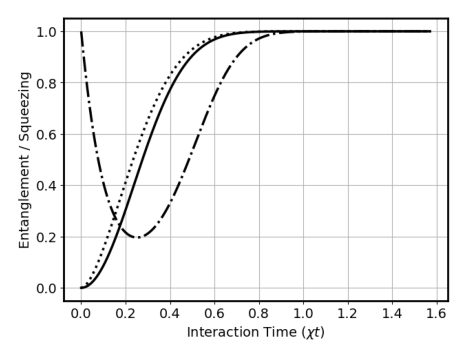
<figcaption class="paper-figure-caption"><b>Fig 1.</b> FIG. 1. Comparison between the standard spin squeezing parameter ξ2 (dash-dotted line) [28], the geometric Entan- glement Distance (solid line) and the normalized Entropy of Entanglement measure for the bi-partition 1 spin/all other spins (dotted line) as a function of dimensionless time χt for the Kitagawa-Ueda Model (N = 10). While squeezing fails to detect entanglement after its minimum, ED mono- tonically tracks the formation of macroscopic non-Gaussian correlations.</figcaption>
</figure>
</div>

<p><strong>Summary.</strong> This paper unifies multiple entanglement measures—including Entanglement Distance (ED) and Quantum Fisher Information (QFI)—by showing they are all rooted in the geometry of the projective Hilbert space. It demonstrates that this geometric measure quantifies the total resourcefulness for local quantum sensing, providing a rigorous link between information geometry and quantum metrology.</p>
<p><strong>Why it may be interesting.</strong> It provides a powerful, unified geometric tool (ED) that connects abstract concepts of entanglement to concrete, measurable quantities in quantum metrology (QFI), which is highly relevant for designing quantum sensing protocols.</p>
<details>
<summary>Detailed structure</summary>
<p><strong>Main problem.</strong> The paper aims to geometrically characterize and quantify quantum entanglement, establishing mathematical equivalences between various measures like Entanglement Distance (ED), Meyer-Wallach, and Quantum Fisher Information (QFI).</p>
<p><strong>Main result.</strong> It proves that ED is mathematically equivalent to the sum of local linear entropies and is directly proportional to the total QFI available for local unitary estimation, bridging geometry and quantum metrology.</p>
<p><strong>Method.</strong> The analysis heavily utilizes the Fubini-Study metric on the projective Hilbert space and relates entanglement measures to the variance of local observable generators.</p>
<p><strong>Model / system.</strong> The work considers general finite-dimensional multipartite systems, analyzing specific dynamics using the Kitagawa-Ueda (KU) model for spin squeezing, and also examining the Haar-random state ensemble.</p>
<p><strong>Key observables.</strong> Entanglement Distance (ED), Quantum Fisher Information (QFI), Spin Squeezing Parameter ($\xi^2$), and local linear entropies.</p>
<p><strong>Important parameters / regimes.</strong> The number of qubits ($N$), time evolution parameter ($t$), and the local generator structure ($\mathfrak{su}(d_\mu)$).</p>
<p><strong>Assumptions / limitations.</strong> The analysis relies on the assumption that the geometric approach is robust for extending measures to infinite-dimensional (CV) systems, though it notes a gap between theoretical saturation and experimental accessibility for random states.</p>
<p><strong>Figures summary.</strong> Figure 1 compares the evolution of the Spin Squeezing Parameter ($\xi^2$), ED, and normalized Entropy of Entanglement for the KU Model, showing ED's distinct behavior.</p>
<p><strong>Paper structure.</strong> The paper establishes the geometric framework using the Fubini-Study metric, derives the equivalence between ED and local entropy sums, applies this framework to the KU model to show metrological advantage, and finally analyzes the global average entanglement for Haar-random states.</p>
</details>
<details>
<summary>Abstract</summary>
<p>Entanglement Distance (ED) was originally proposed as a geometric measure of entanglement derived from the Fubini-Study metric on the projective Hilbert space. Independently, the Meyer-Wallach and Scott measures quantify multipartite entanglement via linear entropy. In this work, we demonstrate that these two seemingly distinct frameworks are mathematically identical for pure states of arbitrary finite dimensions. We prove that ED arises naturally as the trace of the Fubini-Study metric tensor over the local subalgebra of observables. Crucially, this geometric unification yields a direct operational interpretation: the global entanglement of a pure state is exactly proportional to the total Quantum Fisher Information (QFI) available for local unitary estimation. This bridges abstract information geometry with quantum metrology, demonstrating that ED dynamically quantifies resourcefulness for distributed quantum sensing, identifying Heisenberg-limited sensitivity in regimes where standard variance-based witnesses fail.</p>
</details>
<p><sub><a href="#top">↑ back to top</a></sub></p>

<p><a id="paper-2609.11536"></a></p>
<h3 id="impossible-to-conjugate-an-unknown-quantum-state-via-a-unitary-evolution"><a href="http://arxiv.org/abs/2609.11536v1">Impossible to conjugate an unknown quantum state via a unitary evolution</a></h3>
<p><strong>Authors:</strong> Dafa Li<br>
<strong>Type:</strong> theory · <strong>Category:</strong> quantum information and computing · <strong>PDF:</strong> <a href="https://arxiv.org/pdf/2609.11536v1">https://arxiv.org/pdf/2609.11536v1</a><br>
<strong>Analysis basis:</strong> full PDF text, analyzed in chunks
<strong>Topic relevance:</strong> <code>quantum measurements</code> <strong>2/5</strong></p>
<div class="figure-strip-hint">↔ Scroll figures horizontally</div>
<div class="paper-figures-scroll">
<figure class="paper-figure-card">
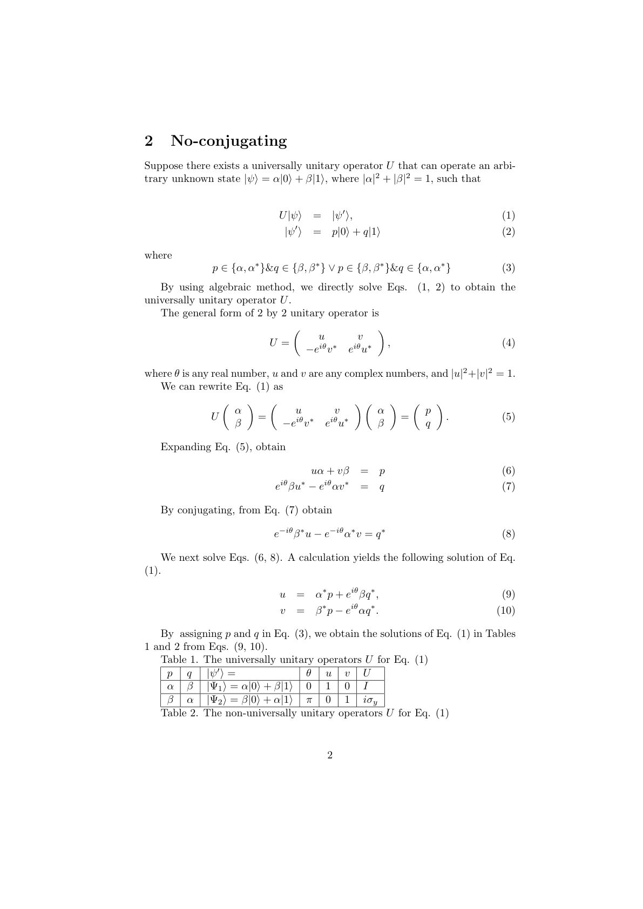
<figcaption class="paper-figure-caption"><b>Fig 1.</b> Low-resolution page preview, page 2</figcaption>
</figure>
<figure class="paper-figure-card">
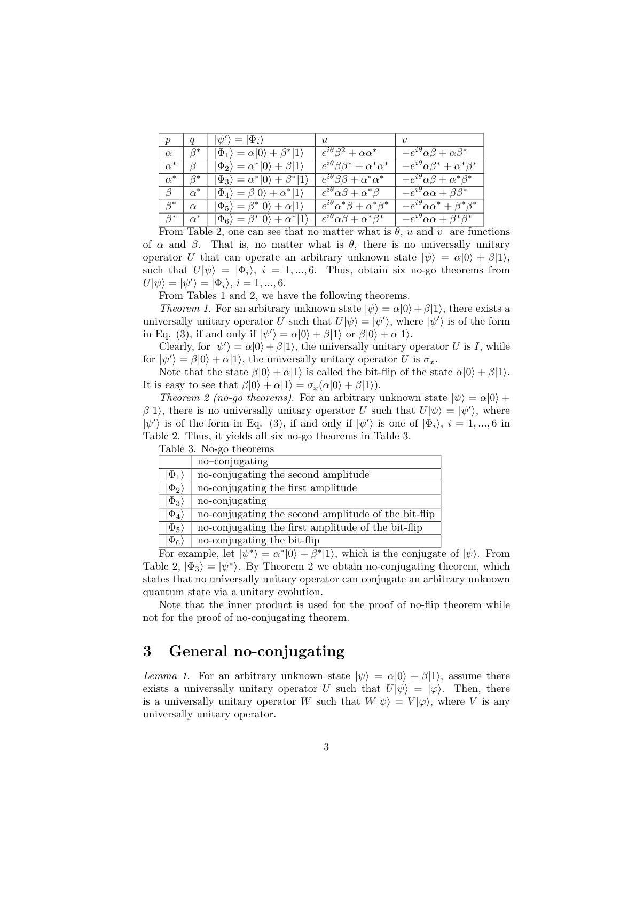
<figcaption class="paper-figure-caption"><b>Fig 2.</b> Low-resolution page preview, page 3</figcaption>
</figure>
<figure class="paper-figure-card">
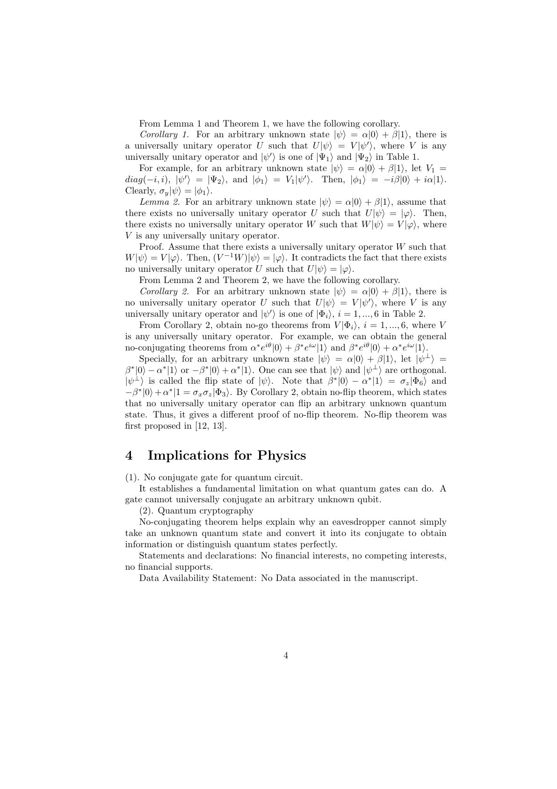
<figcaption class="paper-figure-caption"><b>Fig 3.</b> Low-resolution page preview, page 4</figcaption>
</figure>
<figure class="paper-figure-card">
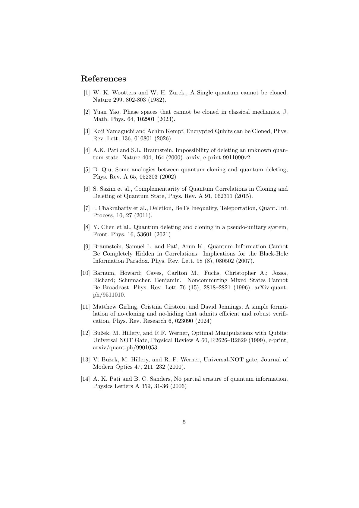
<figcaption class="paper-figure-caption"><b>Fig 4.</b> Low-resolution page preview, page 5</figcaption>
</figure>
</div>

<p><strong>Summary.</strong> This theoretical paper proposes and proves the 'no-conjugating theorem,' showing that an unknown quantum state cannot be transformed into its complex conjugate state using any unitary operation. The proof uses algebraic methods applied to the qubit system, extending the body of known no-go theorems in quantum information theory.</p>
<p><strong>Why it may be interesting.</strong> This work extends the fundamental limitations of quantum operations (like no-cloning) by proving a new impossibility theorem regarding state conjugation, which has implications for quantum measurement and state reconstruction.</p>
<details>
<summary>Detailed structure</summary>
<p><strong>Main problem.</strong> The paper aims to prove the 'no-conjugating theorem,' which asserts that it is impossible to transform an unknown arbitrary quantum state into its complex conjugate state using any universal unitary evolution.</p>
<p><strong>Main result.</strong> The no-conjugating theorem is established, demonstrating that no universal unitary operator can map an arbitrary unknown state $|\psi
angle$ to its conjugate state $|\psi^*
angle$.</p>
<p><strong>Method.</strong> The proof relies on algebraic manipulation of the unitary transformation equations derived from assuming the existence of such an operator, leading to contradictions.</p>
<p><strong>Model / system.</strong> The analysis focuses on a single unknown arbitrary quantum state (a qubit) $|\psi
angle = \alpha|0
angle + eta|1
angle$ and its unitary evolution $U$.</p>
<p><strong>Key observables.</strong> The unknown state $|\psi
angle$, its conjugate $|\psi^*
angle$, and the resulting state $|\psi'
angle$ after unitary evolution.</p>
<p><strong>Important parameters / regimes.</strong> The coefficients $\alpha$ and $eta$ defining the unknown state, and the structure of the $2 	imes 2$ unitary matrix $U$.</p>
<p><strong>Assumptions / limitations.</strong> The analysis assumes the existence of a universal unitary operator $U$ capable of performing the conjugation, which is then shown to be impossible.</p>
<p><strong>Figures summary.</strong> The notes mention a Table 2 listing six specific states ($\{|\Phi_i
angle\}$) that serve as targets for the no-go theorems.</p>
<p><strong>Paper structure.</strong> The paper builds upon established no-cloning and no-broadcasting theorems, first proving conditions under which conjugation is possible (Theorem 1), then establishing the general impossibility (Theorem 2), and finally proving the no-conjugating theorem by setting the target state to the conjugate state $|\psi^*
angle$.</p>
</details>
<details>
<summary>Abstract</summary>
<p>The no-cloning theorem, the no-deleting theorem, the no-hiding theorem, the no-flip theorem, and the no-broadcasting play a crucial role in quantum mechanics and quantum information. In this paper, we propose the no-conjugating theorem which states that it is impossible to conjugate an unknown arbitrary quantum state via a universal physical device or linear/unitary operation.</p>
</details>
<p><sub><a href="#top">↑ back to top</a></sub></p>

<p><a id="paper-2609.10682"></a></p>
<h3 id="lattice-2-group-symmetries-operators-defects-and-gauging"><a href="http://arxiv.org/abs/2609.10682v1">Lattice 2-group symmetries: operators, defects, and gauging</a></h3>
<p><strong>Authors:</strong> Lucas Z. Brito, Salvatore D. Pace<br>
<strong>Type:</strong> theory · <strong>Category:</strong> strongly correlated electrons · <strong>PDF:</strong> <a href="https://arxiv.org/pdf/2609.10682v1">https://arxiv.org/pdf/2609.10682v1</a><br>
<strong>Analysis basis:</strong> full PDF text, analyzed in chunks
<strong>Topic relevance:</strong> <code>analog quantum simulation</code> <strong>2/5</strong></p>
<div class="figure-strip-hint">↔ Scroll figures horizontally</div>
<div class="paper-figures-scroll">
<figure class="paper-figure-card">
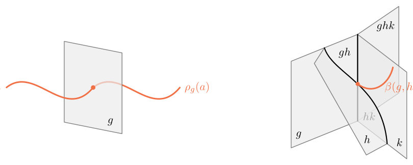
<figcaption class="paper-figure-caption"><b>Fig 1.</b> Figure 1: Defect interpretation in 2 + 1d of the action ρ and Postnikov class [β] of the 2-group (1.3). (a) The action ρ causes an a ∈A topological defect line to become a ρg(a) topological defect line when penetrating a g ∈G topological defect surface. (b) The Postnikov class [β] determines how a topological defect line can end on a 0-dimensional junction of three G topological defect surfaces.</figcaption>
</figure>
<figure class="paper-figure-card">
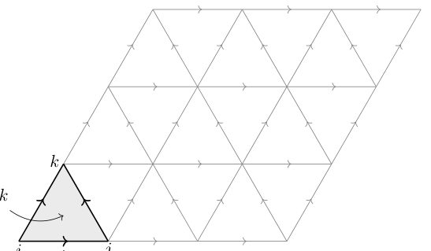
<figcaption class="paper-figure-caption"><b>Fig 2.</b> Figure 2: We consider quantum lattice systems whose spatial lattice is a triangular lattice. There is a corresponding simplicial complex whose branching structure is displayed here. Namely, the orientation of each link always points upwards and to the right.</figcaption>
</figure>
<figure class="paper-figure-card">
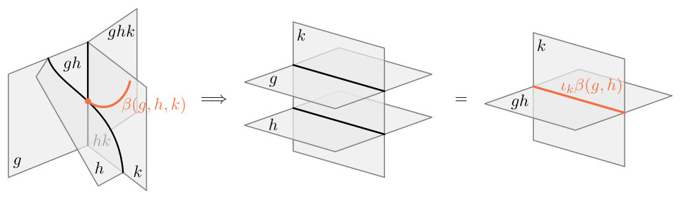
<figcaption class="paper-figure-caption"><b>Fig 3.</b> Figure 3: The Postnikov class [β] of a 2-group symmetry modifies the 0-form symmetry operator algebra in the presence of a 0-form symmetry defect. In the k-defect sector, multiplying CG(k) ≤G symmetry operators creates a 1-form symmetry operator according to the slant product ιkβ.</figcaption>
</figure>
<figure class="paper-figure-card">
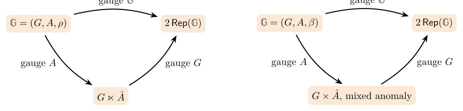
<figcaption class="paper-figure-caption"><b>Fig 4.</b> Figure 4: Gauging web of 2-group symmetry operators in field theory. In the split 2-group case, gauging the 1-form A-symmetry leads to a dual semidirect product 0-form G ⋉ˆA-symmetry for ˆA = Hom(A, U(1)). In the central 2-group case, gauging the 1-form A-symmetry leads to a direct product 0-form G × ˆA-symmetry with mixed anomaly depending on [β]. Gauging the 0-form G symmetry in both cases leads to a dual 2 Rep G symmetry.</figcaption>
</figure>
</div>

<p><strong>Summary.</strong> This theoretical work develops a framework to realize finite 2-group symmetries on quantum lattice models in 2+1 dimensions. By constructing symmetry operators and proposing local Hamiltonians, the authors connect abstract algebraic structures (like 2-groups) to concrete physical models exhibiting topological order. This provides powerful tools for characterizing and solving complex strongly correlated quantum systems.</p>
<p><strong>Why it may be interesting.</strong> The deep connection between higher symmetries (2-groups) and the construction of exactly solvable, symmetry-protected topological phases is highly relevant for understanding exotic quantum matter states.</p>
<details>
<summary>Detailed structure</summary>
<p><strong>Main problem.</strong> The paper constructs and studies lattice realizations of finite 2-group symmetries in $2+1$d quantum lattice systems.</p>
<p><strong>Main result.</strong> It demonstrates that symmetry operators for split and central 2-groups can be constructed, leading to proposals for local symmetric Hamiltonians and identifying exactly solvable limits realizing 2-group gauge theories.</p>
<p><strong>Method.</strong> The authors use advanced algebraic techniques involving cohomology, cocycle conditions, and the construction of symmetry operators on tensor-product Hilbert spaces.</p>
<p><strong>Model / system.</strong> The focus is on quantum lattice models (QLMs) in $2+1$ dimensions defined on a lattice, characterized by finite-dimensional tensor-product Hilbert spaces.</p>
<p><strong>Key observables.</strong> Symmetry operators, symmetry defects, ground-state degeneracies, and the structure of the dual fusion 2-category.</p>
<p><strong>Important parameters / regimes.</strong> The structure of the 2-group (split vs. central), the Postnikov class $[eta]$, and the lattice geometry (e.g., triangular lattice).</p>
<p><strong>Assumptions / limitations.</strong> The analysis is restricted to QLMs with tensor-product Hilbert spaces, which limits the realization of true topological operators.</p>
<p><strong>Figures summary.</strong> Figures illustrate the defect interpretation of symmetry actions ($
ho$ and $[eta]$) and the branching structure of the underlying simplicial complex.</p>
<p><strong>Paper structure.</strong> The paper systematically addresses split 2-group symmetry, then central 2-group symmetry, followed by discussions on the mathematical structure of the symmetries, and concluding with proposals for symmetric Hamiltonians and solvable limits.</p>
</details>
<details>
<summary>Abstract</summary>
<p>We construct and study lattice realizations of finite 2-group symmetries in ${2+1}$d quantum lattice systems with finite-dimensional tensor-product Hilbert spaces. We focus on two broad classes of 2-groups with 0-form symmetry group $G$ and 1-form symmetry group $A$: split 2-groups with trivial Postnikov class ${[β]\in\mathcal{H}^3(G,A)}$, and central 2-groups with trivial action ${ρ\colon G\to\text{Aut}(A)}$. In both cases, we construct symmetry operators on the full tensor-product Hilbert space that become 2-group symmetry operators when restricted to the topological subspace of the lattice $A$ 1-form symmetry. While the lattice split 2-group symmetry operators are onsite, the lattice central 2-group symmetry operators are not, and can only be made onsite after introducing ancillae. We extensively explore various manifestations of $ρ$ and $[β]$ for these lattice 2-group symmetry operators and demonstrate their agreement with expectations from quantum field theory. These manifestations arise in the transformation of operators carrying symmetry charge, the structure of lattice 2-group symmetry defects, and the dual fusion 2-category symmetries obtained by gauging the lattice 2-group symmetries. We further propose families of local symmetric Hamiltonians for both classes of lattice 2-group symmetries and identify exactly solvable limits lying in phases with spontaneous 2-group symmetry breaking and nontrivial symmetry-enriched topological order. In one such limit, the gauged Hamiltonians are exactly solvable lattice realizations of the corresponding 2-group gauge theories, whose ground-state degeneracies we calculate.</p>
</details>
<p><sub><a href="#top">↑ back to top</a></sub></p>

<p><a id="paper-2609.11736"></a></p>
<h3 id="learning-structural-balance-of-graphs-from-quantum-spectral-features"><a href="http://arxiv.org/abs/2609.11736v1">Learning structural balance of graphs from quantum spectral features</a></h3>
<p><strong>Authors:</strong> Stefano Scali, Oleksandr Kyriienko<br>
<strong>Type:</strong> theory · <strong>Category:</strong> disordered systems and neural networks · <strong>PDF:</strong> <a href="https://arxiv.org/pdf/2609.11736v1">https://arxiv.org/pdf/2609.11736v1</a><br>
<strong>Analysis basis:</strong> full PDF text, analyzed in chunks
<strong>Topic relevance:</strong> <code>analog quantum simulation</code> <strong>2/5</strong></p>
<div class="figure-strip-hint">↔ Scroll figures horizontally</div>
<div class="paper-figures-scroll">
<figure class="paper-figure-card">
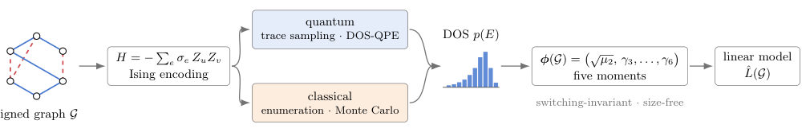
<figcaption class="paper-figure-caption"><b>Fig 1.</b> Figure 1. The DOS feature pipeline for signed graphs. A signed graph G (positive edges solid, negative edges dashed) is encoded in its native Ising Hamiltonian, Eq. (6). The density of states of H is sampled by either arm of the pipeline: classically, by exact enumeration or Monte Carlo over uniform vertex 2-colorings (Proposition 1), or on quantum hardware, by trace sampling or by the DOS-QPE circuit of Fig. 5. Five spectral moments of the sampled density form the feature vector ϕ(G) of Eq. (3), which is switching-invariant and size-free by construction and feeds a classically trained model; we benchmark on the frustration index L(G), for which exact labels are available.</figcaption>
</figure>
<figure class="paper-figure-card">
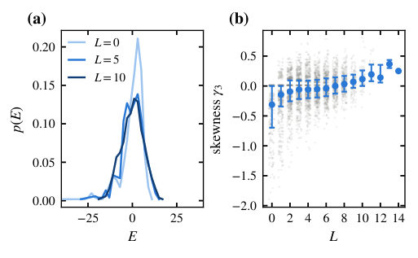
<figcaption class="paper-figure-caption"><b>Fig 2.</b> Figure 2. (a) Exact DOS of three signed graphs with n = 10 vertices and |E| = 39 edges, with frustration index L = 0, 5, 10. Frustration drives the spectrum toward symmetry: the skewness rises from γ3 = −1.90 to −0.64 to −0.15 and the kurtosis falls from γ4 = 8.42 to 4.16 to 2.74, moving towards the Gaussian value of 3. The lower edge sits at E0 = −39, −29, −19, which is 2L−|E| in each case, as Eq. (7) requires. (b) DOS skewness γ3 against the frustration index across the n = 10 ensemble (2 × 104 graphs; gray: individual graphs, markers: median and interquartile range). The trend reflects Eq. (11), while the spread shows why a single moment is insufficient, motivating the combined features...</figcaption>
</figure>
<figure class="paper-figure-card">
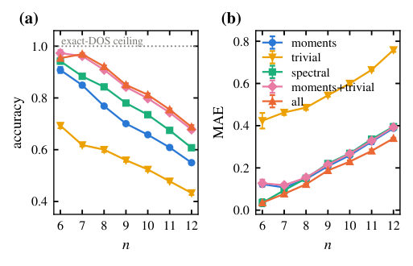
<figcaption class="paper-figure-caption"><b>Fig 3.</b> Figure 3. Estimation quality against graph size for the feature sets of Sec. VI, on the deduplicated evaluation sets. Markers and error bars are the mean and standard deviation over five stratified 70/30 splits. (a) Multiclass accuracy of the multi- nomial logistic regression; the number of classes grows from 4 at n = 6 to 17 at n = 12. The dotted line is the exact-DOS ceiling: every group of graphs sharing a density of states also shares a single L, so a predictor with access to the full density would be exactly right, and the gap below it is the cost of com- pressing that density into five numbers. (b) Mean absolute error (MAE) of the rounded random-forest regression. Exact- class...</figcaption>
</figure>
<figure class="paper-figure-card">
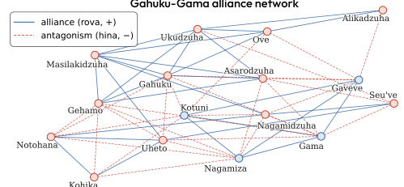
<figcaption class="paper-figure-caption"><b>Fig 4.</b> Figure 4. The Gahuku-Gama alliance network [11] visualized as a signed graph of n = 16 tribes with 29 positive (rova, solid) and 29 negative (hina, dashed) edges corresponding to alliances and antagonistic relations, respectively. Node color marks the two alliance blocs, and the frustration index is L(G) = 7.</figcaption>
</figure>
<figure class="paper-figure-card">
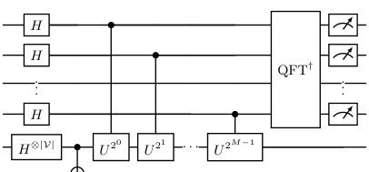
<figcaption class="paper-figure-caption"><b>Fig 5.</b> Figure 5. The DOS-QPE circuit. The lower two registers hold |V| qubits each. A layer of Hadamards followed by a transversal cnot prepares one Bell pair per system qubit, so that discarding the purifying register, which takes no further gates and is never measured, leaves the system in ρ = 1/2|V|. Phase estimation then proceeds as usual: the M-qubit register controls the powers U 2k of U = e−iHτ with τ = 2π/(2|E|+2), and an inverse quantum Fourier transform is followed by mea- surement. Because the probe weighs every eigenstate equally, each outcome y is one flat-weight draw from the spectral den- sity, and the empirical moments of the sampled phases are the features of Eq. (3). The register...</figcaption>
</figure>
</div>

<p><strong>Summary.</strong> This work proposes using the spectral features, specifically the standardized moments of the Density of States (DOS), of an Ising Hamiltonian derived from a signed graph to solve the NP-hard problem of structural balance. By employing a quantum spectral estimation technique (DOS-QPE), the authors demonstrate that these spectral moments can accurately predict the graph's frustration index, opening avenues for quantum machine learning on complex networks.</p>
<p><strong>Why it may be interesting.</strong> It bridges quantum many-body physics (Hamiltonian spectra) with complex combinatorial optimization problems (graph balance), suggesting spectral methods can extract hard-to-find structural invariants.</p>
<details>
<summary>Detailed structure</summary>
<p><strong>Main problem.</strong> The paper addresses the challenge of learning the structural balance (frustration index) of signed graphs, which is an NP-hard problem.</p>
<p><strong>Main result.</strong> The standardized moments derived from the Density of States (DOS) of the associated Ising Hamiltonian successfully recover the frustration index for large datasets, suggesting a quantum spectral feature approach for graph analysis.</p>
<p><strong>Method.</strong> The authors map the signed graph problem onto an Ising model and use quantum spectral feature extraction (DOS moments) as machine learning inputs. They propose DOS-QPE for efficient quantum sampling.</p>
<p><strong>Model / system.</strong> The system is a signed graph embedded as an Ising model instance, $H = \sum J_{ij} Z_i Z_j$. The features are derived from the standardized moments of the Hamiltonian's Density of States (DOS).</p>
<p><strong>Key observables.</strong> Standardized moments of the DOS ($\phi(G)$), the frustration index $L(G)$, and the ground-state energy $E_0$.</p>
<p><strong>Important parameters / regimes.</strong> Graph size ($n=12$ vertices benchmarked), the number of standardized moments used (five), and the field strength (zero field vs. general dynamics).</p>
<p><strong>Assumptions / limitations.</strong> The core assumption is that the spectral statistics (DOS) contain sufficient, invariant information to determine the graph's structural balance, and that quantum methods are necessary for general dynamics.</p>
<p><strong>Figures summary.</strong> Figure 1 illustrates the entire pipeline: Signed Graph $
ightarrow$ Ising Hamiltonian $
ightarrow$ DOS Sampling (Quantum/Classical) $
ightarrow$ Five Moments $\phi(G) 
ightarrow$ Linear Model $
ightarrow$ Prediction of $L(G)$. Figure 2 shows how the DOS spectrum changes for graphs with different frustration levels.</p>
<p><strong>Paper structure.</strong> The paper introduces the problem (structural balance), develops the physical encoding (Ising Hamiltonian), proposes the quantum feature extraction method (DOS-QPE), validates it against the known ground truth (zero field), and discusses its applicability to hard problems (general dynamics).</p>
</details>
<details>
<summary>Abstract</summary>
<p>We develop a quantum approach to spectral feature extraction from the density of states (DOS) of a problem-dependent Hamiltonian, and apply it to machine learning on signed graphs. We propose to embed a signed graph as an Ising model instance with positive and negative interactions, and use the standardized moments of the Ising DOS as features for learning. We show that these moments count signed closed walks, are switching-invariant, and are size-free by construction. As a benchmark, we target learning the frustration index, an NP-hard measure of structural balance that can be labeled exactly at moderate size. At zero field, the models can be sampled classically, allowing the quantum extraction procedure to be certified against exact ground truth. We propose DOS-QPE, a phase estimation on a purified maximally mixed probe, which samples the spectral density with orders of magnitude fewer shots than Hadamard test-based trace sampling and feeds the resulting features directly into classically trained models. On $1.4\times10^5$ labeled graphs the exact DOS determines the frustration index, and five moments recover it with a mean error of 0.4, well below one sign flip. Beyond zero field, the underlying trace-estimation problem is DQC1-complete, providing access to spectral features for which no efficient classical sampling method is known. Our work opens routes towards quantum applications in social network balance analysis, spin-glass studies, correlation clustering, and protein-interaction networks.</p>
</details>
<p><sub><a href="#top">↑ back to top</a></sub></p>

<p><a id="paper-2609.11723"></a></p>
<h3 id="lifted-surgery-fast-processing-with-qldpc-codes"><a href="http://arxiv.org/abs/2609.11723v1">Lifted surgery: Fast processing with QLDPC codes</a></h3>
<p><strong>Authors:</strong> Lucas Berent, Lawrence Z. Cohen, Armanda O. Quintavalle<br>
<strong>Type:</strong> theory · <strong>Category:</strong> quantum information and computing · <strong>PDF:</strong> <a href="https://arxiv.org/pdf/2609.11723v1">https://arxiv.org/pdf/2609.11723v1</a><br>
<strong>Analysis basis:</strong> full PDF text, analyzed in chunks
<strong>Topic relevance:</strong> <code>quantum measurements</code> <strong>2/5</strong></p>
<div class="figure-strip-hint">↔ Scroll figures horizontally</div>
<div class="paper-figures-scroll">
<figure class="paper-figure-card">
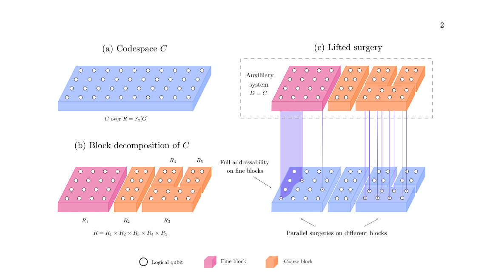
<figcaption class="paper-figure-caption"><b>Fig 1.</b> Figure 1. Graphical representation of lifted surgery. (a) Codespace of C• over the group algebra R (blue). (b) The codespace decomposes into the same blocks as the group algebra R. (c) The top row (magenta and orange) shows the auxiliary complex, a copy of C•. Different lifted surgeries can be combined to act in parallel on different blocks. When the blocks are fields, as in the quantum radial code example, lifted surgery allows for single logical qubit addressability.</figcaption>
</figure>
<figure class="paper-figure-card">
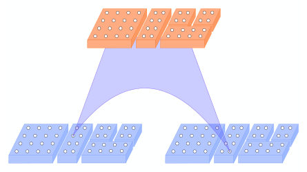
<figcaption class="paper-figure-caption"><b>Fig 2.</b> Figure 2. Graphical representation of bridged lifted surgery. On the bottom row are two copies of the same base codespace, C and C′, over the group algebra R. On the top row is an auxiliary copy of the same codespace, D. The purple sheet connects the auxiliary code D to the two codespaces C and C′</figcaption>
</figure>
<figure class="paper-figure-card">
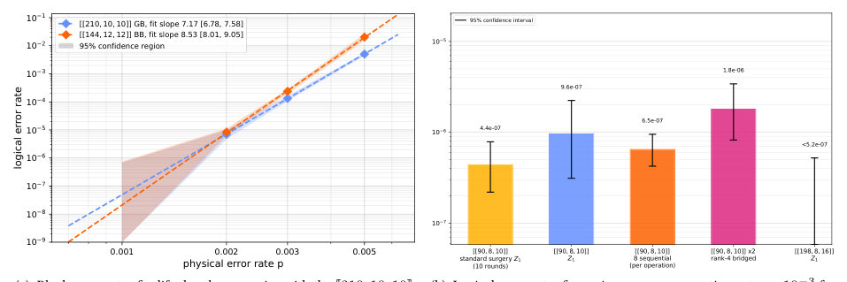
<figcaption class="paper-figure-caption"><b>Fig 3.</b> Figure 3. Numerical decoding simulation results. (a) Logical error rates for a single round of lifted (scalar) surgery with the J210, 10, 10K GB and the Gross code. Dashed lines are maximum-likelihood fits and the shaded region corresponds to a 95% confidence region. At p = 10−3 we did not find a logical error for either of the codes in at least 5 × 106 shots. (b) Block error rates per logical operation at p = 10−3 for various numerical surgery experiments on the J90, 8, 10K and J198, 8, 16K radial codes. The first bar (yellow) shows the LER of a standard surgery experiment of Z1 on the J90, 8, 10K code with 10 rounds of syndrome extraction, all decoded at once; the second bar (blue) shows...</figcaption>
</figure>
</div>

<p><strong>Summary.</strong> This paper presents 'lifted surgery,' a novel, algebraically derived technique to drastically reduce the time overhead associated with performing logical measurements on QLDPC quantum error-correcting codes. By leveraging block decompositions and commutative algebra, it achieves fast, parallel syndrome extraction, offering a practical path toward scalable, low-overhead fault-tolerant quantum computing.</p>
<p><strong>Why it may be interesting.</strong> While focused on QLDPC codes, the underlying mathematical machinery involving homology, chain complexes, and algebraic characterization of measurable operators is highly relevant to theoretical studies of quantum error correction codes in general.</p>
<details>
<summary>Detailed structure</summary>
<p><strong>Main problem.</strong> The primary challenge is overcoming the significant time overhead associated with performing logical operations in Quantum Low-Density Parity-Check (QLDPC) codes.</p>
<p><strong>Main result.</strong> The authors introduce 'lifted surgery,' a method that achieves fast and parallel code surgery, requiring an order of magnitude fewer syndrome measurement rounds than standard techniques while maintaining low physical overhead.</p>
<p><strong>Method.</strong> The method utilizes advanced algebraic techniques, including block decompositions and commutative algebra, to characterize and construct the lifted surgery process on Abelian group algebra codes.</p>
<p><strong>Model / system.</strong> The work focuses on QLDPC codes, which are promising candidates for fault-tolerant quantum computation due to their high encoding rates. The analysis is heavily mathematical, involving chain complexes and homology groups.</p>
<p><strong>Key observables.</strong> Logical performance, number of syndrome measurement rounds, and the dimension of the measured logical operator space.</p>
<p><strong>Important parameters / regimes.</strong> Code parameters such as $[[90, 8, 10]]$ and $[[198, 8, 16]]$, and the noise model (circuit-level depolarizing noise).</p>
<p><strong>Assumptions / limitations.</strong> The analysis relies on the algebraic structure of the underlying code algebra, particularly when the blocks are fields, simplifying the addressability criteria.</p>
<p><strong>Figures summary.</strong> Figures illustrate the graphical representation of lifted surgery, showing the codespace decomposition and the auxiliary complex used to facilitate parallel operations.</p>
<p><strong>Paper structure.</strong> The paper progresses from defining the problem (time overhead in code surgery) to introducing the mathematical framework (lifted surgery using algebra), providing explicit constructions (quantum radial codes), and concluding with rigorous mathematical characterizations of addressable submodules and joint measurements.</p>
</details>
<details>
<summary>Abstract</summary>
<p>Quantum low-density parity-check (QLDPC) codes are a leading candidate for achieving low-overhead fault-tolerant quantum computing. However, the time overhead of logical operations in QLDPC codes remains a key challenge. Code surgery, a space-efficient technique for fault-tolerant logical measurements, incurs this overhead through repeated rounds of syndrome measurement. We introduce lifted surgery, a method for fast and parallel surgery on Abelian group algebra codes that maintains the low physical overhead that makes QLDPC codes attractive. Lifted surgery preserves the symmetries of the underlying code, making searches for large instances tractable and offering a natural route towards efficient hardware implementations. We utilise block decompositions and techniques from commutative algebra to characterise lifted surgery, investigate well-behaved subfamilies, and construct explicit examples. In particular, we present quantum radial codes with parameters $[[90, 8, 10]]$ and $[[198, 8, 16 ]]$ for which surgery is fast, parallel, and addressable, allowing arbitrary sets of independent logical operators of the same Pauli type to be measured in a single round of syndrome extraction. We benchmark lifted surgery under circuit-level depolarising noise and, for the $[[ 90, 8, 10 ]]$ code, find logical performance comparable to standard code surgery while requiring ten times fewer rounds of syndrome measurement. By combining speed and parallelism, lifted surgery offers a practical route towards low-overhead fault-tolerant quantum computing.</p>
</details>
<p><sub><a href="#top">↑ back to top</a></sub></p>

<p><a id="paper-2609.10976"></a></p>
<h3 id="phases-in-a-class-of-associative-memories-via-hidden-neurons"><a href="http://arxiv.org/abs/2609.10976v1">Phases in a class of associative memories via hidden neurons</a></h3>
<p><strong>Authors:</strong> Toshihiro Ota, Masato Taki<br>
<strong>Type:</strong> theory · <strong>Category:</strong> disordered systems and neural networks · <strong>PDF:</strong> <a href="https://arxiv.org/pdf/2609.10976v1">https://arxiv.org/pdf/2609.10976v1</a><br>
<strong>Analysis basis:</strong> full PDF text, analyzed in chunks
<strong>Topic relevance:</strong> <code>Keldysh / 2PI / non-Gaussian methods</code> <strong>2/5</strong></p>
<div class="figure-strip-hint">↔ Scroll figures horizontally</div>
<div class="paper-figures-scroll">
<figure class="paper-figure-card">
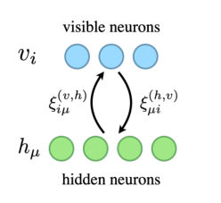
<figcaption class="paper-figure-caption"><b>Fig 1.</b> FIG. 1: The class-H associative memories. The Nv visible neurons and the Nh hidden neurons form a bipartite network with no intralayer connections.</figcaption>
</figure>
<figure class="paper-figure-card">
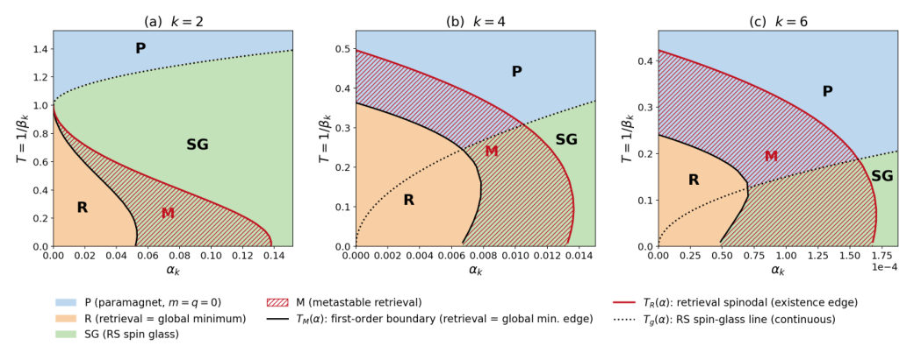
<figcaption class="paper-figure-caption"><b>Fig 2.</b> FIG. 2: RS phase diagram of Model A in the (αk, T) plane for (a) k = 2, (b) k = 4, and (c) k = 6, where T = 1/βk is the effective temperature. In the retrieval phase (R) the retrieval states are the global minima of the free energy. In the region M they persist only as metastable states. The red solid line is the retrieval spinodal TR(αk), beyond which no retrieval solution of Eq. (23)–Eq. (25) exists. The black solid line is the first-order boundary TM(αk), on which the retrieval free energy crosses that of the m = 0 branch. The dotted line is the continuous spin-glass transition Tg(αk) of Eq. (37), separating the paramagnet (P) from the RS spin glass (SG). For k &gt; 2 the first-order...</figcaption>
</figure>
<figure class="paper-figure-card">
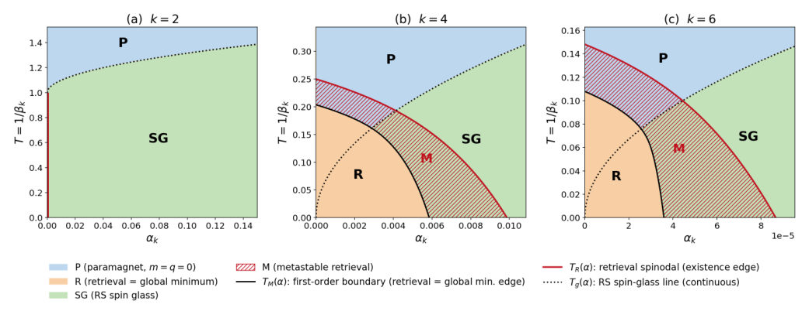
<figcaption class="paper-figure-caption"><b>Fig 3.</b> FIG. 3: RS phase diagram of Model C in the (αk, T) plane for (a) k = 2, (b) k = 4, and (c) k = 6, in the same conventions as Fig. 2. For k = 2 retrieval survives only on the segment αk = 0, T ≤1 (red line on the vertical axis), reflecting the zero capacity of the spherical model. For k &gt; 2 the diagram has the same topology as that of Model A, with uniformly smaller retrieval regions.</figcaption>
</figure>
<figure class="paper-figure-card">
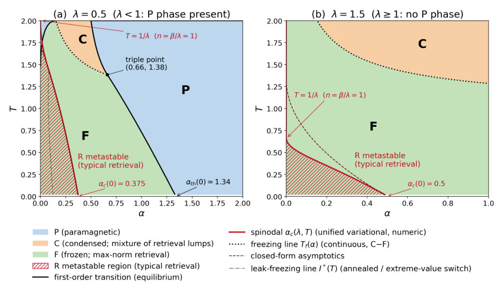
<figcaption class="paper-figure-caption"><b>Fig 4.</b> FIG. 4: Finite-temperature phase diagram of Model B in the (α, T) plane at (a) λ = 0.5 and (b) λ = 1.5. Black solid lines are the first-order boundaries between the paramagnetic phase (P) and the condensed sector, obtained by equating the free energies Eq. (65). For λ ≥1 the paramagnetic phase is absent, and in (a) the P–F boundary meets T = 0 at αth(0) determined by 2α/λ = 1 + εmax(α), see Appendix C 1. The dotted line is the freezing line Eq. (66), the continuous transition on which the entropy of the condensed phase (C) vanishes and the measure freezes onto the maximum-norm patterns (F). It is independent of λ and hence identical in the two panels. The thick red line is the retrieval...</figcaption>
</figure>
<figure class="paper-figure-card">
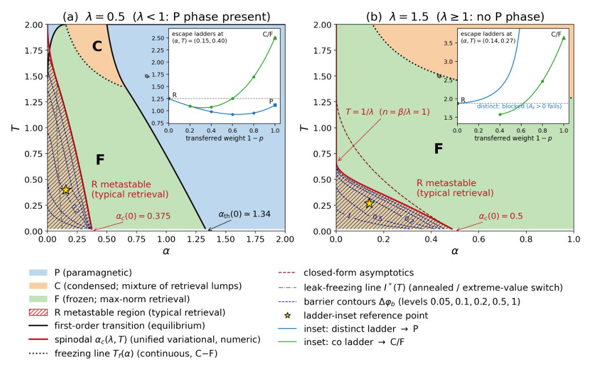
<figcaption class="paper-figure-caption"><b>Fig 5.</b> FIG. 5: Same as Fig. 4, with the dynamical content of the real-temperature construction overlaid. The blue dashed curves are contours of the escape barrier Eq. (C67), evaluated along the lower of the two escape ladders, at the levels ∆φb = 0.05, 0.1, 0.2, 0.5, and 1. The barrier vanishes on the spinodal and grows toward small α and low temperature. The insets show the constrained rate φ along the two escape ladders at the starred reference points, (α, T) = (0.15, 0.40) in (a) and (0.14, 0.27) in (b), against the transferred attention weight 1 −p: the distinct-defection ladder (blue, annealed curve with rungs at pk = 1 −kλT) ends at the paramagnetic value, and the co-defection ladder (green)...</figcaption>
</figure>
</div>

<p><strong>Summary.</strong> This paper develops a unified theoretical framework, the class H, to study associative memories by treating hidden neurons as the order parameter. It analyzes how retrieval dynamics change between polynomial and exponential loading regimes, revealing distinct crossover behaviors in crosstalk statistics. The work provides a deep physical understanding of how stability and storage capacity are governed by separate Lagrangian components.</p>
<p><strong>Why it may be interesting.</strong> The rigorous application of statistical mechanics tools (replica method, random-energy models) to neural network dynamics provides deep insights into pattern storage capacity and phase transitions, which are foundational concepts in many-body physics.</p>
<details>
<summary>Detailed structure</summary>
<p><strong>Main problem.</strong> The paper aims to unify the study of associative memory retrieval across different loading regimes (polynomial vs. exponential) by analyzing a generalized bipartite architecture.</p>
<p><strong>Main result.</strong> The proposed class H splits retrieval into two distinct roles: the visible Lagrangian controls stability, while the hidden Lagrangian dictates the storage scale and disorder statistics.</p>
<p><strong>Method.</strong> The analysis employs advanced statistical physics techniques, including the replica method and mapping to random-energy models, to derive phase diagrams and capacities.</p>
<p><strong>Model / system.</strong> The system is the 'class H,' a bipartite network combining Krotov and Hopfield architectures, modeled by an energy function involving visible and hidden neuron dynamics. The hidden neurons are treated as the order parameter for memory retrieval.</p>
<p><strong>Key observables.</strong> Retrieval overlap ($m$), Edwards–Anderson order parameter ($q$), and crosstalk noise ($r$).</p>
<p><strong>Important parameters / regimes.</strong> Load parameter ($\alpha_k$), inverse temperature ($eta$), and the distinction between polynomial and exponential load regimes.</p>
<p><strong>Assumptions / limitations.</strong> The analysis relies on the replica symmetric (RS) ansatz in the replica method, and the adiabatic limit ($   au_v \gg    au_h$) is used for certain derivations.</p>
<p><strong>Figures summary.</strong> Figure 1 illustrates the bipartite network structure. Figure 2 shows the RS phase diagram in the $(\alpha_k, T)$ plane, distinguishing retrieval, spin glass, and paramagnetic phases. Figure 5 overlays dynamical escape barriers onto equilibrium phase diagrams.</p>
<p><strong>Paper structure.</strong> The paper systematically analyzes the model using the replica method for polynomial loads (Models A and C), then extends to exponential loads (Model B). It develops the general framework (class H) and discusses the physical interpretation of the different Lagrangian components.</p>
</details>
<details>
<summary>Abstract</summary>
<p>Associative memory in the Hopfield network is attractor dynamics in a disordered many-body system, and higher-order and exponential extensions turn its retrieval update into softmax attention. The polynomial and exponential regimes have been analyzed by different methods, with no common architecture in which to ask what fixes the storage scale. In this paper we study the bipartite architecture of Krotov and Hopfield, which we call the class $H$, whose model is fixed by a Lagrangian for each layer, taking the hidden neurons as the order parameter of retrieval. At polynomial load the replica method yields the replica-symmetric phase diagrams and closed-form capacities, and the crosstalk moment is common to Ising and spherical visible neurons, so their differences come from the visible entropy. With a softmax hidden layer the load is exponential, and a copy representation maps the thermodynamics onto random-energy-model counting, with paramagnetic, condensed, and frozen phases. Heating destabilizes retrieval by quantized reassignments of attention, and typical Gaussian patterns remain metastable at every load. The regimes differ in their crosstalk statistics, central-limit at polynomial load and large-deviation at exponential load, and the class $H$ splits retrieval into two roles, the visible Lagrangian fixing stability and the hidden one the storage scale, two axes that may also guide the design of new Lagrangians.</p>
</details>
<p><sub><a href="#top">↑ back to top</a></sub></p>

<p><a id="paper-2609.11810"></a></p>
<h3 id="interacting-tomonaga-luttinger-liquid-with-impurity-for-interaction-constant-math521math-thermopower-investigation-entropy-variation-and-heat-capacity-densities-associated-with-thermoelectric-particle-transport"><a href="http://arxiv.org/abs/2609.11810v1">Interacting Tomonaga-Lüttinger liquid with impurity for interaction constant $K = 1/2$: Thermopower investigation, entropy variation and heat capacity densities associated with thermoelectric particle transport</a></h3>
<p><strong>Authors:</strong> Abdellah Touati, Redoune Zamoum, Farhi Houssam Eddine<br>
<strong>Type:</strong> theory · <strong>Category:</strong> strongly correlated electrons · <strong>PDF:</strong> <a href="https://arxiv.org/pdf/2609.11810v1">https://arxiv.org/pdf/2609.11810v1</a><br>
<strong>Analysis basis:</strong> full PDF text, analyzed in chunks
<strong>Topic relevance:</strong> <code>Keldysh / 2PI / non-Gaussian methods</code> <strong>1/5</strong> · <code>analog quantum simulation</code> <strong>1/5</strong> · <code>correlated / nonlocal dissipation</code> <strong>1/5</strong> · <code>non-equilibrium universality</code> <strong>1/5</strong></p>
<div class="figure-strip-hint">↔ Scroll figures horizontally</div>
<div class="paper-figures-scroll">
<figure class="paper-figure-card">

<figcaption class="paper-figure-caption"><b>Fig 1.</b> FIG. 1. Schematic representation of a one-channel conductor with bare transmission τ0 embedded in an electric circuit.</figcaption>
</figure>
<figure class="paper-figure-card">

<figcaption class="paper-figure-caption"><b>Fig 2.</b> FIG. 2. Schematic representation of a hybrid normal metal ν = 1 linked with a ν = 1/3 fractional quantum Hall edge states.</figcaption>
</figure>
<figure class="paper-figure-card">

<figcaption class="paper-figure-caption"><b>Fig 3.</b> FIG. 3. Variation of thermopower: In first row, versus temperature kBT/eV in left panel and applied voltage eV/kBT in right panel and for different backscattering amplitude ΓB/eV , and ΓB/kBT for QPC system. In second row, versus temperature kBT/ℏωc in left panel and applied voltage eV/ℏωc in right panel and for different effective transmission τ, for OCC system.</figcaption>
</figure>
<figure class="paper-figure-card">

<figcaption class="paper-figure-caption"><b>Fig 4.</b> FIG. 4. Power factor: In left pannel, versus bias voltage eV/kBT for different backscattering amplitude ΓB/kBT for QPC system. In right pannel,versus bias voltage eV/ℏωc for different effective transmission τ, for OCC system.</figcaption>
</figure>
<figure class="paper-figure-card">

<figcaption class="paper-figure-caption"><b>Fig 5.</b> FIG. 5. Seebeck coefficient: In first row, versus temperature kBT/εF in left panel and Fermi energy εF /kBT in right panel and for different backscattering amplitude ΓB/εF , and ΓB/kBT for QPC system. In second row, versus temperature kBT/ℏωc in left panel and Fermi energy εF /ℏωc in right panel and for different effective transmission τ, for OCC system.</figcaption>
</figure>
</div>

<p><strong>Summary.</strong> This theoretical work analyzes the thermoelectric and thermodynamic properties of an interacting Tomonaga-Lüttinger liquid with an impurity. Using advanced field-theoretic methods, the authors derive relationships showing that the thermopower, entropy variation, and heat capacity all exhibit characteristic Mott-like behavior at low temperatures. The findings unify concepts of quantum transport and mesoscopic thermodynamics in 1D correlated systems.</p>
<p><strong>Why it may be interesting.</strong> The explicit connection derived between non-equilibrium transport (thermopower) and equilibrium thermodynamics (heat capacity/entropy) in a strongly correlated 1D system provides a powerful tool for understanding energy dissipation in quantum conductors.</p>
<details>
<summary>Detailed structure</summary>
<p><strong>Main problem.</strong> The paper investigates the thermoelectric and thermodynamic properties associated with particle transport in an interacting Tomonaga-Lüttinger liquid (TLL) containing an impurity.</p>
<p><strong>Main result.</strong> The study establishes a close link between thermoelectric transport (thermopower) and thermodynamic quantities (entropy variation and heat capacity), showing both exhibit Mott-like behavior at low temperatures.</p>
<p><strong>Method.</strong> The analysis employs bosonization and refermionization techniques to derive exact expressions for transport coefficients in both linear and nonlinear regimes.</p>
<p><strong>Model / system.</strong> The primary model is an interacting TLL with an impurity, specifically analyzed for the interaction constant K=1/2. Applications include a quantum point contact between an FQH edge state and a normal metal, and a one-channel conductor coupled to an Ohmic environment.</p>
<p><strong>Key observables.</strong> Thermopower (Q), Seebeck coefficient, Entropy variation (ΔS), and Heat capacity density (C).</p>
<p><strong>Important parameters / regimes.</strong> Interaction constant K=1/2, low-temperature limit, and the energy dependence of the transmission coefficient.</p>
<p><strong>Assumptions / limitations.</strong> The analysis utilizes the Sommerfeld approximation for low temperatures and relies on mapping the system to a solvable TLL model.</p>
<p><strong>Figures summary.</strong> Figures illustrate the temperature and bias voltage dependence of the thermopower, and show the variation of the heat capacity density (C) versus temperature and Fermi energy for both QPC and OCC systems.</p>
<p><strong>Paper structure.</strong> The paper systematically covers the theoretical framework, derives transport coefficients using Landauer formalism, analyzes the temperature and bias dependence of Q, ΔS, and C, and concludes by applying the results to specific quantum point contact and conductor models.</p>
</details>
<details>
<summary>Abstract</summary>
<p>We investigate thermoelectric and thermodynamic properties of a Tomonaga-Luttinger liquid with interaction parameter $K=1/2$ in the presence of a localized impurity. Using bosonization and refermionization, we derive an exact expression for the thermopower in the nonlinear regime and obtain the corresponding Seebeck coefficient in linear response. At low temperature, the Seebeck coefficient follows a Mott-like relation governed by the energy dependence of the transmission coefficient and is found to be closely related to the entropy per particle. This connection allows us to derive using Kelvin formula the thermopower contribution to the entropy density variation and the charge-carriers contribution to the heat capacity density. Both quantities exhibit Mott-like behavior in the low-temperature regime. We apply our results to a fractional quantum Hall quantum point contact and to a one-channel quantum conductor coupled to an Ohmic environment. Our results demonstrate the close connection between thermoelectric transport and thermodynamic properties in interacting one-dimensional quantum systems.</p>
</details>
<p><sub><a href="#top">↑ back to top</a></sub></p>

<p><a id="paper-2609.11340"></a></p>
<h3 id="information-theoretic-characterization-of-macroscopic-chaos-emerging-from-the-chemical-master-equation"><a href="http://arxiv.org/abs/2609.11340v1">Information-Theoretic Characterization of Macroscopic Chaos Emerging from the Chemical Master Equation</a></h3>
<p><strong>Authors:</strong> Kenshin Matsumoto, Shin-ichi Sasa<br>
<strong>Type:</strong> theory · <strong>Category:</strong> statistical mechanics · <strong>PDF:</strong> <a href="https://arxiv.org/pdf/2609.11340v1">https://arxiv.org/pdf/2609.11340v1</a><br>
<strong>Analysis basis:</strong> full PDF text, analyzed in chunks
<strong>Topic relevance:</strong> <code>Keldysh / 2PI / non-Gaussian methods</code> <strong>1/5</strong> · <code>driven-dissipative phase transition</code> <strong>1/5</strong> · <code>non-equilibrium universality</code> <strong>1/5</strong></p>
<div class="figure-strip-hint">↔ Scroll figures horizontally</div>
<div class="paper-figures-scroll">
<figure class="paper-figure-card">

<figcaption class="paper-figure-caption"><b>Fig 1.</b> FIG. 1. Representative concentration time series of the modified CS14 model generated using the tau-leap method. The concentrations (x(t), y(t), z(t)) are shown for V = 102</figcaption>
</figure>
<figure class="paper-figure-card">

<figcaption class="paper-figure-caption"><b>Fig 2.</b> FIG. 2. Time evolution of I(X(V ) t ; X(V ) 0 ) for the modi- fied CS14 model at V = 10j, j = 2, . . . , 6. Symbols show k-nearest-neighbor estimates with k = 10, and error bars in- dicate standard errors. The number of initial concentrations is Nini = 50, and the number of sample trajectories generated from each initial concentration is Nsample = 106.</figcaption>
</figure>
<figure class="paper-figure-card">

<figcaption class="paper-figure-caption"><b>Fig 3.</b> FIG. 3. Relative information loss ∆I(V )(t; tref) from tref = 5 for V = 104, 105, and 106. Symbols show kNN estimates ob- tained using 106 samples for each system size with k = 10. The error bars indicate standard errors, and the colored lines connect the symbols. The black dashed curve shows the Gaus- sian entropy increment in Eq. (17), obtained by integrating the covariance equation (E10). The inset shows the residual ∆H(V ) G (t; tref)/(t −tref) −hKS on logarithmic axes.</figcaption>
</figure>
<figure class="paper-figure-card">

<figcaption class="paper-figure-caption"><b>Fig 4.</b> FIG. 4. Finite-time correction to the rate of Gaussian in- formation loss for the modified CS14 model. The black curve shows (t −tref)[∆H(V ) G (t; tref)/(t −tref) −hKS] as a function of ln(t −tref). The red dashed line shows a linear fit. The ap- proximately linear dependence is consistent with a correction proportional to ln(t −tref)/(t −tref).</figcaption>
</figure>
<figure class="paper-figure-card">

<figcaption class="paper-figure-caption"><b>Fig 5.</b> Figure 4 shows the finite-time approach of the Gaus- sian entropy-growth rate to the KS entropy. The ap- proximately linear dependence of the transformed resid- ual on ln(t −tref) indicates a correction proportional to ln(t −tref)/(t −tref). To determine its origin, we exam- ine the finite-time behavior implied by Eq. (E20). The modified CS14 model has one zero Lyapunov exponent. For its neutral direction, we assume that the correspond- ing diagonal component of Rt exhibits power-law growth, r0(t) ∼tα0, with α0 &gt; 0. These assumptions give the fol- lowing asymptotic forms:</figcaption>
</figure>
</div>

<p><strong>Summary.</strong> This paper develops a theoretical framework to quantify chaos in chemical reaction systems by analyzing information loss. It proves that the rate at which mutual information decays in the stochastic system converges to the Kolmogorov-Sinai entropy of the deterministic limit. This establishes a rigorous connection between information theory and the quantification of deterministic chaos in open, fluctuating physical systems.</p>
<p><strong>Why it may be interesting.</strong> This work provides a powerful, information-theoretic bridge between the microscopic stochastic dynamics (CME) and the macroscopic deterministic chaos (KS entropy), which is highly relevant for understanding open quantum systems where noise and dissipation are key.</p>
<details>
<summary>Detailed structure</summary>
<p><strong>Main problem.</strong> The paper theoretically investigates whether an information-theoretic measure derived from the stochastic Chemical Master Equation (CME) converges to the Kolmogorov-Sinai (KS) entropy in the macroscopic limit.</p>
<p><strong>Main result.</strong> The rate of decrease of the two-time mutual information, $-rac{d}{dt}I(X(V)_t; X(V)_0)$, is shown to converge to the KS entropy ($h_{KS}$) in the large system-size limit ($V 	o \infty$).</p>
<p><strong>Method.</strong> The analysis involves relating the time evolution of mutual information to the conditional entropy, utilizing Gaussian approximations, and connecting the long-time growth rate to the sum of positive Lyapunov exponents.</p>
<p><strong>Model / system.</strong> The study uses open chemical reaction networks, specifically demonstrating the results with a modified CS14 three-species system. The dynamics are governed by the Chemical Master Equation (CME) in the stochastic regime and deterministic rate equations in the macroscopic limit.</p>
<p><strong>Key observables.</strong> Mutual Information ($I$), Conditional Entropy ($H(\mathbf{X}(V)_t | \mathbf{X}(V)_0)$), Gaussian Entropy Increment ($\Delta H_G(V)$), and the Kolmogorov-Sinai entropy ($h_{KS}$).</p>
<p><strong>Important parameters / regimes.</strong> System size ($V$), time ($t$), and the Lyapunov exponents ($\lambda_i$) derived from the deterministic rate equations.</p>
<p><strong>Assumptions / limitations.</strong> The analysis relies on the Gaussian approximation for the conditional distribution at large $V$ and assumes the convergence of the information loss rate to the KS entropy in the macroscopic limit.</p>
<p><strong>Figures summary.</strong> Figure 1 shows stochastic concentration time series approaching the deterministic limit. Figure 2 and Figure 4 illustrate the time evolution of the mutual information and the Gaussian entropy-growth rate, respectively, showing the convergence to $h_{KS}$ with finite-time corrections.</p>
<p><strong>Paper structure.</strong> The paper establishes the theoretical link between information loss and KS entropy, derives the necessary mathematical tools using mutual information and conditional entropy, and then applies these tools to the CME in the large-system-size limit to confirm the convergence.</p>
</details>
<details>
<summary>Abstract</summary>
<p>Open chemical reaction networks exhibit stochastic concentration dynamics at finite system sizes, whereas their macroscopic limit is governed by deterministic rate equations that can display chaos. In this Letter, we show theoretically that a rate of information loss constructed from two-time mutual information recovers the Kolmogorov-Sinai entropy in the deterministic limit. We verify this result through numerical simulations of a Markov jump process for a three-species system involving seven reactions.</p>
</details>
<p><sub><a href="#top">↑ back to top</a></sub></p>

<p><a id="paper-2609.11898"></a></p>
<h3 id="taking-advantage-of-noise-in-distributed-random-quantum-circuits"><a href="http://arxiv.org/abs/2609.11898v1">Taking Advantage of Noise in Distributed Random Quantum Circuits</a></h3>
<p><strong>Authors:</strong> J. Montes, F. Borondo, Gabriel G. Carlo<br>
<strong>Type:</strong> theory · <strong>Category:</strong> quantum information and computing · <strong>PDF:</strong> <a href="https://arxiv.org/pdf/2609.11898v1">https://arxiv.org/pdf/2609.11898v1</a><br>
<strong>Analysis basis:</strong> full PDF text, analyzed in chunks
<strong>Topic relevance:</strong> <code>correlated / nonlocal dissipation</code> <strong>1/5</strong> · <code>driven-dissipative phase transition</code> <strong>1/5</strong> · <code>methods for driven-dissipative</code> <strong>1/5</strong></p>
<div class="figure-strip-hint">↔ Scroll figures horizontally</div>
<div class="paper-figures-scroll">
<figure class="paper-figure-card">

<figcaption class="paper-figure-caption"><b>Fig 1.</b> Figure 1. Validation of the analytical predictions in the weak-noise regime. The left column tests the universal radial law, Eq. (51), by comparing the numerical coefficient ∆R/γ with the analytical prediction aR at γ = 10−4 for the available topology, partition, c, and k grid. The right column tests the branch-resolved angular susceptibility by comparing bnum A = [∆A(10−4) −∆A(0)]/10−4 with the perturbative prediction bpert A obtained from the full derivative M ′ ch(0) on a sample of 324 points. Panels (a,c,e) correspond to the radial test for AD, DEP, and DPH, respectively; panels (b,d,f) show the corresponding angular-susceptibility test. Dashed lines denote perfect agreement.</figcaption>
</figure>
<figure class="paper-figure-card">

<figcaption class="paper-figure-caption"><b>Fig 2.</b> Figure 2. Representative angular gap curves as a function of the number of intra-core iterations for a linear 2 × 3 architecture. For each k the gap is optimized over the grid of c. The upper row shows the branch-resolved angular gap ∆A for the three channels. The lower row shows the dissipative ratio ρ = ∆R/∆A for the same configurations. Horizontal lines mark ρ = 0.1 and ρ = 0.3.</figcaption>
</figure>
<figure class="paper-figure-card">

<figcaption class="paper-figure-caption"><b>Fig 3.</b> Figure 4 shows that noise also renormalizes the opti- mal architecture parameters. As γ increases to 0.020, the conditional optimum k∗(c) generally shifts toward more intra-core iterations. The shift is topology and partition dependent. For AD, the linear/star 3×2 architectures in- crease the average ⟨k∗⟩c by approximately 1.36, whereas the 2 × 2 architectures change by only about 0.27. In terms of Eq. (2), this corresponds to a reduction of the average communication ratio: as radial cost grows, the</figcaption>
</figure>
<figure class="paper-figure-card">

<figcaption class="paper-figure-caption"><b>Fig 4.</b> Figure 3. Statistical summary over the 36 refined tensors. (a) Median and interquartile range of the optimized angular improvement ∆∗ A(γ)/∆∗ A(0). (b) Median dissipative ratio ρ∗at the angular optimum. (c) Radial-normalized angular gap ∆∗ A|R(γ)/∆∗ A|R(0). (d) Fraction of (c, k) grid points with positive radial-normalized improvement. The superscript ∗denotes optimization over the scanned (c, k) grid, except for ρ∗, which is evaluated at the angular-gap optimum.</figcaption>
</figure>
<figure class="paper-figure-card">

<figcaption class="paper-figure-caption"><b>Fig 5.</b> Figure 4. Change in the optimal configuration between γ = 0 and γ = 0.020. For each architecture and channel, the local depth k is optimized for each value of c and then averaged over c. (a) Shift of the mean optimal number of intra-core iterations. (b) Change in the inter-core communication ratio r = EG/(Ck). (c) Dissipative ratio at the global angular optimum for γ = 0.020.</figcaption>
</figure>
</div>

<p><strong>Summary.</strong> This paper develops a theoretical framework to determine if noise can enhance quantum computation in distributed circuits. By analyzing the second-moment dynamics, the authors separate the noise effects into dissipative (radial) and mixing (angular) components. They conclude that only amplitude damping provides a genuine, measurable advantage for mixing, while other noise types are dominated by simple information loss.</p>
<p><strong>Why it may be interesting.</strong> It provides a rigorous, quantitative framework for diagnosing the utility of noise in quantum hardware, which is crucial for designing fault-tolerant or noise-resilient quantum computation protocols.</p>
<details>
<summary>Detailed structure</summary>
<p><strong>Main problem.</strong> The paper investigates the fundamental question of whether adding noise to a random quantum circuit provides genuine computational advantage (useful randomization) or merely causes information loss (dissipation).</p>
<p><strong>Main result.</strong> The analysis shows that useful noise-assisted randomization is highly conditional, identifying amplitude damping (AD) as the only locally favorable noise channel for angular mixing, while distinguishing this genuine effect from simple dissipation.</p>
<p><strong>Method.</strong> The authors employ a reduced second-moment transfer-matrix theory, separating the noisy dynamics into a dissipative radial branch and a mixing angular branch to analyze the decay rates.</p>
<p><strong>Model / system.</strong> The study models distributed random quantum circuits, relevant for modular quantum processors, subjected to local noise channels: amplitude damping (AD), depolarizing (DEP), and dephasing (DPH).</p>
<p><strong>Key observables.</strong> Second moments of Pauli operators, the radial leakage coefficient, and the ratio ($
ho$) comparing radial decay to angular mixing rates.</p>
<p><strong>Important parameters / regimes.</strong> Weak-noise regime, noise strength ($\gamma$), and the specific noise channel (AD, DEP, DPH).</p>
<p><strong>Assumptions / limitations.</strong> The analysis assumes vanishing cross-correlations and transverse symmetry for the local mixing blocks, and it relies on separating the noisy spectrum into distinct radial and angular modes.</p>
<p><strong>Figures summary.</strong> Figures illustrate the comparison of raw vs. normalized angular gaps ($\Delta_A$ vs. $
ho$) across different noise types, showing that the radial-normalized improvement ($\Delta^*_A|R$) is the key diagnostic for genuine noise assistance.</p>
<p><strong>Paper structure.</strong> The paper develops the theoretical framework by analyzing the second-moment evolution, derives a weak-noise criterion based on noise channel properties, and then applies this to multicore architectures to distinguish useful randomization from dissipation.</p>
</details>
<details>
<summary>Abstract</summary>
<p>Adding noise can make a random quantum circuit look faster without making its unitary dynamics more random. This distinction is especially relevant in modular processors, where local gates randomize each core and scarce inter-core communication must spread that randomness across the full device. In this paper, we study this problem with a reduced second-moment transfer-matrix theory for Pauli second moments in distributed random circuits affected by the amplitude-damping, depolarizing, and dephasing noise channels. The key step is to resolve the noisy spectrum into two branches: a radial branch, describing dissipative loss of non-identity Pauli weight, and an angular branch, describing Haar-like mixing within the surviving nontrivial sector. This separation gives a simple weak-noise criterion: noise is useful for angular randomization only when it suppresses the longitudinal Bloch component more strongly than the transverse plane. Among the three channels considered, this selects amplitude damping as the only locally favorable case, while depolarizing noise is neutral and dephasing is dominated by radial loss. For multicore architectures, we derive a universal first-order law for radial leakage and track the angular branch numerically across different channels, topologies, and core partitions. The results reveal narrow windows of genuine noise-assisted Haar mixing, most clearly for amplitude damping, but rule out a generic speed-up by noise. The framework therefore distinguishes useful noisy randomization from mere dissipation.</p>
</details>
<p><sub><a href="#top">↑ back to top</a></sub></p>

<p><a id="paper-2609.11089"></a></p>
<h3 id="detecting-one-dimensional-bosonic-spt-phases-via-twisted-entropic-order-parameter"><a href="http://arxiv.org/abs/2609.11089v1">Detecting one-dimensional bosonic SPT phases via twisted entropic order parameter</a></h3>
<p><strong>Authors:</strong> Kosei Fujiki, Tsubasa Oishi, Soichiro Shimamori<br>
<strong>Type:</strong> theory · <strong>Category:</strong> other · <strong>PDF:</strong> <a href="https://arxiv.org/pdf/2609.11089v1">https://arxiv.org/pdf/2609.11089v1</a><br>
<strong>Analysis basis:</strong> full PDF text, analyzed in chunks
<strong>Topic relevance:</strong> <code>analog quantum simulation</code> <strong>1/5</strong> · <code>quantum measurements</code> <strong>1/5</strong></p>
<div class="figure-strip-hint">↔ Scroll figures horizontally</div>
<div class="paper-figures-scroll">
<figure class="paper-figure-card">

<figcaption class="paper-figure-caption"><b>Fig 1.</b> Figure 1: Schematic illustration of a symmetry-defect endpoint charge in one-dimensional bosonic SPT fixed points. When a half-infinite g-symmetry operator bUB g acts on an SPT ground state, its bulk action can be pulled through the state, leaving an endpoint operator V † g localized near the right boundary of region A. At a fixed-point representative, this reduction is exact, while for a generic state in the same phase, the endpoint operator is dressed quasi-locally. Under the readout symmetry bUA k (k ∈CH(g)), its endpoint operator transforms as (2.15).</figcaption>
</figure>
<figure class="paper-figure-card">

<figcaption class="paper-figure-caption"><b>Fig 2.</b> Figure 2: Schematic construction of the state |Ξg⟩CAB. The ancilla state |0⟩C labels the untwisted branch, while |1⟩C labels the branch with the one-ended g-symmetry operator bUB g acting on region B.</figcaption>
</figure>
<figure class="paper-figure-card">

<figcaption class="paper-figure-caption"><b>Fig 3.</b> Figure 3: The twisted entropic order parameter for N = 2, with (L, ℓA) = (20, 9), (30, 15), (40, 19), computed from the ground state of (2.77) obtained by two-site DMRG. The transition between the trivial and SPT phases occurs at h(1) τ = 1.</figcaption>
</figure>
<figure class="paper-figure-card">

<figcaption class="paper-figure-caption"><b>Fig 4.</b> Figure 4: The twisted entropic order parameters for q = 0, 1, 2 and N = 3, with L = 30 and ℓA = 15, computed as in figure 3. Each ∆Stwi e,q vanishes in the SPTq phase.</figcaption>
</figure>
</div>

<p><strong>Summary.</strong> The paper introduces the twisted entropic order parameter, a refined entanglement diagnostic, to overcome the limitations of standard entanglement asymmetry in characterizing Symmetry-Protected Topological (SPT) phases. By incorporating an ancilla degree of freedom, this parameter successfully extracts topological information—the endpoint charge—that is otherwise invisible, allowing for the precise classification of 1D bosonic SPT phases.</p>
<p><strong>Why it may be interesting.</strong> This work provides a powerful, entanglement-based diagnostic tool to probe subtle topological order in condensed matter systems, extending beyond simple symmetry breaking patterns.</p>
<details>
<summary>Detailed structure</summary>
<p><strong>Main problem.</strong> Ordinary entanglement asymmetry fails to distinguish between different Symmetry-Protected Topological (SPT) phases that share the same symmetry-breaking pattern. The goal is to refine this diagnostic to detect the residual SPT data protected by the unbroken subgroup.</p>
<p><strong>Main result.</strong> The twisted entropic order parameter successfully diagnoses SPT phases by probing the endpoint charge, which is invisible to standard entanglement asymmetry measures.</p>
<p><strong>Method.</strong> The authors introduce a twisted entropic order parameter by enlarging the system with an ancilla degree of freedom to coherently record the untwisted and twisted states associated with a topological defect.</p>
<p><strong>Model / system.</strong> The focus is on one-dimensional bosonic gapped phases exhibiting symmetry breaking $G 	o H$. The method is applied to lattice models, such as the clock-broken $Z_N$ cluster ladder model.</p>
<p><strong>Key observables.</strong> The twisted entropic order parameter ($\Delta S_{	ext{twi}, g, \lambda}(A)$) and the associated endpoint charge $\epsilon_{\omega}^g(k)$.</p>
<p><strong>Important parameters / regimes.</strong> The residual $  ext{H-SPT}$ class $[\omega] \in H^2(H, U(1))$ and the symmetry group structure ($G, H$).</p>
<p><strong>Assumptions / limitations.</strong> The method is most rigorously defined at a zero-correlation-length fixed point; the detection capability might fail for SPT phases with nontrivial Bogomolov multipliers.</p>
<p><strong>Figures summary.</strong> Figures schematically illustrate the concept of a symmetry-defect endpoint charge and the construction of the enlarged state $|\Xi_g
angle_{CAB}$ used for the diagnostic.</p>
<p><strong>Paper structure.</strong> The paper first establishes the failure of standard diagnostics, then introduces the twisted entropic order parameter using an ancilla degree of freedom to probe the endpoint charge. It provides concrete examples in 1D bosonic systems and generalizes the framework to detect residual SPT information.</p>
</details>
<details>
<summary>Abstract</summary>
<p>Entanglement asymmetry, introduced by F. Ares, S. Murciano and P. Calabrese, provides a density-matrix diagnostic of symmetry breaking and successfully captures the Landau data associated with a broken symmetry pattern. However, it is by now well established that gapped quantum many-body systems can exhibit phases which are not characterized solely by Landau symmetry breaking. A fundamental example is a symmetry-protected topological (SPT) phase, and the ordinary definition of entanglement asymmetry is insensitive to this topological information. In this work we introduce a refined quantity, which we call the twisted entropic order parameter, designed to detect SPT phases from reduced density matrices, particularly focusing on one-dimensional bosonic systems. The key ingredient in our construction is an ancilla degrees of freedom that coherently records the untwisted state and the twisted state associated to a one-ended topological defect of unbroken symmetry, so that the enlarged density matrix retains the charge carried by the defect endpoint. We demonstrate our proposal in concrete lattice models and further generalize it beyond ordinary group symmetries, establishing its ability to diagnose SPT phases. This provides a first step toward a unified entanglement-asymmetry framework for diagnosing quantum phases of matter.</p>
</details>
<p><sub><a href="#top">↑ back to top</a></sub></p>

<p><a id="paper-2609.11927"></a></p>
<h3 id="effective-ionic-valence-and-local-magnetic-moment-in-kagome-superconductors"><a href="http://arxiv.org/abs/2609.11927v1">Effective Ionic Valence and Local Magnetic Moment in Kagome Superconductors</a></h3>
<p><strong>Authors:</strong> Ruoshi Jiang, Zi-Jian Lang, Yuzki Oey, Andrea Capa Salinas, Stephen D. Wilson, Yongwei Li, Ilya Shipulin, Yiwen Zhang, Deng Hu, Zhiwei Wang, Hans-Henning Klauss, Zurab Guguchia, Vadim Grinenko, Wei Ku<br>
<strong>Type:</strong> both · <strong>Category:</strong> strongly correlated electrons · <strong>PDF:</strong> <a href="https://arxiv.org/pdf/2609.11927v1">https://arxiv.org/pdf/2609.11927v1</a><br>
<strong>Analysis basis:</strong> full PDF text, analyzed in chunks
<strong>Topic relevance:</strong> <code>analog quantum simulation</code> <strong>1/5</strong> · <code>quantum measurements</code> <strong>1/5</strong></p>
<div class="figure-strip-hint">↔ Scroll figures horizontally</div>
<div class="paper-figures-scroll">
<figure class="paper-figure-card">

<figcaption class="paper-figure-caption"><b>Fig 1.</b> FIG. 1. Hartree-scale analysis of ionic valence and magnetic moment in kagome metals. Local orbital-specific density of states (DOS) in noncollinear Curie-paramagnetic phase of RbV3Sb5 for (a) spin majority V↑and minority V↓channels of V indicate a V2+ ion with an effective spin- 3</figcaption>
</figure>
<figure class="paper-figure-card">

<figcaption class="paper-figure-caption"><b>Fig 2.</b> FIG. 2. Sketch of relieving geometric frustration to reveal local mag- netic moments in kagome metals. (a), (c) In geometrically frustrated kagome lattice, nearest neighboring antiferromagnetic couplings are completely frustrated, such that classical local moments are ener- getically free to orient in arbitrary directions. In kagome metals, coupling to itinerant carriers would fluctuate the moments too fast for typical experiments. (b), (d) Upon substituting Sb(1) and Sb(2) by (nonmagnetic) Sn impurities, the perfect geometric frustration is relieved, allowing correlation of various strengths (denoted by differ- ent colors) between nearest neighboring bonds, and associated with it locally...</figcaption>
</figure>
<figure class="paper-figure-card">

<figcaption class="paper-figure-caption"><b>Fig 3.</b> FIG. 3. Detection of local moments and spin fluctuations in RbV3Sb5−xSnx. (a) Temperature dependence of the magnetic sus- ceptibility χ = M/B for polycrystalline samples with different Sn doping levels. The data contain identical extra contributions from the same sample holder. (As a reference, undoped stoichiometric com- pound data are given in Fig. 9.) (b) Temperature dependence of the inverse magnetic susceptibility (χ −χ0)−1 for data shown in (a); the data for x = 0.1 are divided by 10 for clarity. Linear fits are used to define Curie constant C. Inset shows C for samples with a different Sn doping level. C increases linearly with the doping level corre- sponding to an effective moment...</figcaption>
</figure>
<figure class="paper-figure-card">

<figcaption class="paper-figure-caption"><b>Fig 4.</b> FIG. 4. Comparing our local orbital-specific density of states (DOS) in the Curie-paramagnetic phase with that obtained from LDA+DMFT method. Note the direct access to ionic spin structure resulting from our method. Also note the expected energy splitting associated with the “bare” intra-atomic repulsion ∼5 eV, in contrast to the reduced energy ∼2 eV of the intra-atomic Coulomb repulsion from the LDA+DMFT method.</figcaption>
</figure>
<figure class="paper-figure-card">

<figcaption class="paper-figure-caption"><b>Fig 5.</b> FIG. 5. Robustness of Hartree-scale driven V2+ local moments against the dilute nonmagnetic Sn dopant. Partial density of states of V in the presence of a Sn impurity substituting one of the 20 Sb atoms in a supercell at the (a) Sb(1) site and (b) Sb(2) site (under ferromagnetic order for clarity). The results display nearly identical lower- and upper-Hubbard structures as the undoped system with an effective d3 high-spin configuration.</figcaption>
</figure>
</div>

<p><strong>Summary.</strong> This work investigates the correlated behavior in Kagome superconductors by proposing that local ionic magnetic moments, rather than just itinerant carriers, are crucial. Theoretical calculations predict these moments, and experimental doping with Sn impurities successfully confirms their existence via magnetic measurements. This suggests a major revision to existing models of superconductivity in these materials.</p>
<p><strong>Why it may be interesting.</strong> The emphasis on local moments and strong correlations in a geometrically frustrated superconducting lattice is highly relevant to understanding exotic quantum states in strongly correlated electron systems.</p>
<details>
<summary>Detailed structure</summary>
<p><strong>Main problem.</strong> The paper aims to resolve the discrepancy in understanding the correlated behavior of Kagome superconductors ($   ext{AV}_3   ext{Sb}_5$ and $    ext{ATi}_3  ext{Bi}_5$) by investigating the role of local ionic magnetic moments.</p>
<p><strong>Main result.</strong> The study suggests a paradigm shift from purely itinerant carrier descriptions to one that must incorporate strong correlations arising from local ionic spins, which were experimentally confirmed via Sn-doping.</p>
<p><strong>Method.</strong> The approach combines Hartree-scale electronic structure calculations to model local moments with experimental measurements (magnetic susceptibility and $\mu	ext{SR}$) on doped samples.</p>
<p><strong>Model / system.</strong> The physical systems are Kagome lattice superconductors, specifically $ ext{AV}_3   ext{Sb}_5$ and $    ext{ATi}_3  ext{Bi}_5$. The theoretical modeling focuses on capturing short-range physics and local orbital-specific density of states.</p>
<p><strong>Key observables.</strong> Local magnetic moments, magnetic susceptibility ($\chi$), spin relaxation rates ($\mu	ext{SR}$), and local electronic valence states.</p>
<p><strong>Important parameters / regimes.</strong> The doping concentration ($x$) of nonmagnetic Sn impurities, which is used to locally relieve geometric frustration.</p>
<p><strong>Assumptions / limitations.</strong> The initial theoretical calculations are performed in a non-collinear Curie-paramagnetic phase to avoid assuming long-range magnetic order.</p>
<p><strong>Figures summary.</strong> Figures illustrate the local atomic orbital-specific DOS for the superconducting compounds, the mechanism by which Sn impurities relieve geometric frustration, and the temperature dependence of magnetic susceptibility showing Curie-Weiss behavior proportional to doping.</p>
<p><strong>Paper structure.</strong> The paper progresses by first establishing the theoretical framework using Hartree-scale calculations to predict local moments, then using Sn-doping to experimentally verify the existence of these moments, and finally concluding with the necessity of incorporating local spin correlations into the superconducting picture.</p>
</details>
<details>
<summary>Abstract</summary>
<p>In order to understand the unexpected similarity and the correlated behavior in kagome superconductor families AV$_3$Sb$_5$ (A = K, Rb, Cs) and ATi$_3$Bi$_5$ (A = Rb, Cs), we investigate the Hartree-scale local electronic structure of these systems. Our result indicates that V and Ti ions are both of 2+ valence such that the corresponding itinerant carrier densities are similar, and the difference in electron count is instead reflected in their quantum fluctuating ionic magnetic moments. However, due to the frustrated lattice geometry of these materials, such local moments are difficult to experimentally observe via standard probes. For verification, we systematically introduce nonmagnetic Sn impurities to locally relieve the geometric frustration and experimentally demonstrate the existence of well-defined local magnetic moments via magnetic susceptibility and muon spin rotation or relaxation ($μ$SR) measurements. All experiments discover a systematic increase of magnetic susceptibility upon increasing nonmagnetic impurity level. Our discovered ionic moments suggest a paradigm shift from the existing itinerant carrier-only picture to one incorporating strong correlation from local ionic spins. The associated interatomic and local-itinerant correlations offer a solid ground for the emergence of the observed rich correlated behavior in this new family of superconducting materials.</p>
</details>
<p><sub><a href="#top">↑ back to top</a></sub></p>

<p><a id="paper-2609.10713"></a></p>
<h3 id="perfect-math554math-state-transfer"><a href="http://arxiv.org/abs/2609.10713v1">Perfect $(s,r)$-state transfer</a></h3>
<p><strong>Authors:</strong> Stephen Kirkland, Hermie Monterde, Sarah Plosker<br>
<strong>Type:</strong> theory · <strong>Category:</strong> quantum information and computing · <strong>PDF:</strong> <a href="https://arxiv.org/pdf/2609.10713v1">https://arxiv.org/pdf/2609.10713v1</a><br>
<strong>Analysis basis:</strong> full PDF text, analyzed in chunks
<strong>Topic relevance:</strong> <code>analog quantum simulation</code> <strong>1/5</strong> · <code>quantum measurements</code> <strong>1/5</strong></p>
<div class="figure-strip-hint">↔ Scroll figures horizontally</div>
<div class="paper-figures-scroll">
<figure class="paper-figure-card">

<figcaption class="paper-figure-caption"><b>Fig 1.</b> Low-resolution page preview, page 2</figcaption>
</figure>
<figure class="paper-figure-card">

<figcaption class="paper-figure-caption"><b>Fig 2.</b> Low-resolution page preview, page 3</figcaption>
</figure>
<figure class="paper-figure-card">

<figcaption class="paper-figure-caption"><b>Fig 3.</b> Low-resolution page preview, page 4</figcaption>
</figure>
<figure class="paper-figure-card">

<figcaption class="paper-figure-caption"><b>Fig 4.</b> Low-resolution page preview, page 5</figcaption>
</figure>
<figure class="paper-figure-card">

<figcaption class="paper-figure-caption"><b>Fig 5.</b> Low-resolution page preview, page 6</figcaption>
</figure>
</div>

<p><strong>Summary.</strong> This work generalizes quantum state transfer to entangled 's-pair' states on graph structures. It characterizes the conditions for perfect transfer, showing that the entanglement degree can be manipulated, even increased, during the process. The paper also provides tools to analyze the robustness of this transfer against time measurement errors.</p>
<p><strong>Why it may be interesting.</strong> The concept of controlling entanglement transfer and quantifying the robustness of these quantum processes against measurement errors (sensitivity analysis) is highly relevant to designing robust quantum communication protocols.</p>
<details>
<summary>Detailed structure</summary>
<p><strong>Main problem.</strong> The paper investigates perfect $(s,r)$-state transfer, which is a generalization of quantum state transfer from an $s$-pair entangled state to an $r$-pair entangled state.</p>
<p><strong>Main result.</strong> The authors identify infinite families of graphs exhibiting this perfect transfer and demonstrate that the degree of entanglement can be boosted (increased) if $|r| 
eq |s|$.</p>
<p><strong>Method.</strong> The study uses spectral analysis of the transition operator derived from graph Hamiltonians, along with developing algorithms to maximize transfer fidelity and performing sensitivity analysis.</p>
<p><strong>Model / system.</strong> The system is modeled as quantum state transfer on an undirected graph, where the dynamics are governed by a continuous-time quantum walk Hamiltonian (e.g., adjacency or Laplacian matrix). The states are generalized to $s$-pair states, $\mathbf u = \mathbf e_a + s \mathbf e_b$.</p>
<p><strong>Key observables.</strong> Fidelity of transfer, degree of entanglement ($|s|$ or $|r|$), and the second derivative of the fidelity function (sensitivity to time errors).</p>
<p><strong>Important parameters / regimes.</strong> The complex parameters $r$ and $s$ defining the initial and final entangled states, and the graph structure itself.</p>
<p><strong>Assumptions / limitations.</strong> The analysis often focuses on the single excitation subspace of the Hamiltonian, and specific results are derived assuming the initial and final states have exactly two non-zero entries.</p>
<p><strong>Figures summary.</strong> The notes do not describe specific figures, but mention examples like P5, $K_{1,n}$, and $CP(n)$ used to calculate fidelity and sensitivity.</p>
<p><strong>Paper structure.</strong> The paper progresses from defining the generalized PST problem, characterizing it for specific graph families ($K_n, K_{a,b}$), developing algorithms for fidelity maximization, and concluding with sensitivity analysis.</p>
</details>
<details>
<summary>Abstract</summary>
<p>Much work has been done in the last two decades on the topic of quantum state transfer in a quantum spin network. One can model such a system of interacting qubits using an undirected graph, and studying vertex-to-vertex dynamics. This setup has recently been relaxed to allow for dynamics between linear combinations of two vertex states, i.e.\ from $\mathbf u = \mathbf e_a + s \mathbf e_b$ to $\mathbf μ=\mathbf e_α + r \mathbf e_β$, where $r=s$ is either $-1$ (which corresponds to pair state transfer) or $+1$ (which corresponds to plus state transfer), or more recently $r=s$ is taken to be any real number (which corresponds to $s$-pair state transfer).   Here, we broaden the investigation of $s$-pair state transfer to \textit{perfect $(s,r)$-state transfer}, which is perfect state transfer from $\mathbf u = \mathbf e_a + s \mathbf e_b$ to $\mathbf μ=\mathbf e_α + r \mathbf e_β$ (up to some dilation) where $r,s\in \mathbb C$. We identify infinite families of graphs with perfect $(s,r)$-state transfer and provide characterizations of cases when $|r|= |s|$ and when $|r|\neq |s|$, showing situations when the degree of entanglement between vertex states is preserved, and when it is not preserved. The latter is particularly important as it represents perfect state transfer from an entangled pair of qubits to another one where the degree of entanglement need not be the same\mdash in fact, it can be set up so as to ``boost'' (increase) entanglement. We provide an algorithm that finds the vector with two nonzero entries that maximizes the fidelity of transfer for a fixed time $t$ starting from a given $s$-pair state $\mathbf u$. Finally, we provide a sensitivity analysis, with respect to readout time errors, of perfect $(s,r)$-state transfer.</p>
</details>
<p><sub><a href="#top">↑ back to top</a></sub></p>

<p><a id="paper-2609.11816"></a></p>
<h3 id="piezomagnetism-in-a-model-cubic-noncollinear-altermagnet"><a href="http://arxiv.org/abs/2609.11816v1">Piezomagnetism in a model cubic noncollinear altermagnet</a></h3>
<p><strong>Authors:</strong> Sudarshan Sharma, Luca Buiarelli, Richard Spieker, Ivan Jakovac, Damjan Pelc, Turan Birol, Martin Greven<br>
<strong>Type:</strong> both · <strong>Category:</strong> other · <strong>PDF:</strong> <a href="https://arxiv.org/pdf/2609.11816v1">https://arxiv.org/pdf/2609.11816v1</a><br>
<strong>Analysis basis:</strong> full PDF text, analyzed in chunks
<strong>Topic relevance:</strong> <code>analog quantum simulation</code> <strong>1/5</strong> · <code>quantum measurements</code> <strong>1/5</strong></p>
<div class="figure-strip-hint">↔ Scroll figures horizontally</div>
<div class="paper-figures-scroll">
<figure class="paper-figure-card">

<figcaption class="paper-figure-caption"><b>Fig 1.</b> Fig. 1 Magnetic structure and experimental setup. a, Schematic crystal and noncollinear magnetic spin</figcaption>
</figure>
<figure class="paper-figure-card">

<figcaption class="paper-figure-caption"><b>Fig 2.</b> Fig. 2 Transverse magnetostriction measurements for magnetic field along [100] and ∆L along [110]. a,</figcaption>
</figure>
<figure class="paper-figure-card">

<figcaption class="paper-figure-caption"><b>Fig 3.</b> Figure 1b shows a sketch of the lattice response of cubic MnTe2 to a magnetic field along [001]. For this geometry, an in-plane shear strain is induced with a magnitude that is proportional to the applied field. In other words, there is a linear magnetostriction component along [110], whereas magnetostriction is purely quadratic along [100]. As shown in Fig. 2a and Extended Data Fig. 2, our data confirm these predictions: along [110], the magnetostriction is dominated by a linear magnetic field dependence, while along [100] the response is purely quadratic. A small quadratic contribution is also observed along [110]; this is expected in any material regardless of symmetry and carries no...</figcaption>
</figure>
<figure class="paper-figure-card">

<figcaption class="paper-figure-caption"><b>Fig 4.</b> Fig. 3 Nuclear magnetic resonance measurements of the stress-induced ferromagnetic moment. a,</figcaption>
</figure>
<figure class="paper-figure-card">

<figcaption class="paper-figure-caption"><b>Fig 5.</b> Fig. 4 First-principles calculations. a, Electronic band structure of MnTe2, colored by the spin magnetization</figcaption>
</figure>
</div>

<p><strong>Summary.</strong> This work demonstrates that piezomagnetism is a definitive signature of altermagnetism, using $    ext{MnTe}_2$ as a model system. By combining dilatometry, NMR, and DFT, the authors successfully measured and confirmed a linear coupling between applied strain and magnetic moment. This opens new avenues for controlling spintronic devices using coupled strain and magnetic fields.</p>
<p><strong>Why it may be interesting.</strong> While focused on condensed matter magnetism, the use of coupled external fields (strain and magnetic field) to control electronic properties is relevant to understanding emergent quantum phenomena in engineered materials, bridging concepts from AMO physics (field control) to solid-state physics.</p>
<details>
<summary>Detailed structure</summary>
<p><strong>Main problem.</strong> The study investigates piezomagnetism—the linear coupling between lattice strain and net magnetic moment—as a key signature distinguishing altermagnetism from conventional antiferromagnetism.</p>
<p><strong>Main result.</strong> The authors report observing a large piezomagnetic response in the model cubic altermagnet $   ext{MnTe}_2$, confirmed by agreement between dilatometry measurements (shear strain proportional to $H$) and NMR detection of an induced ferromagnetic moment.</p>
<p><strong>Method.</strong> The research combines multiple experimental techniques, including dilatometry and NMR, with first-principles Density Functional Theory (DFT) calculations to probe the magnetostrictive and piezomagnetic coupling coefficients.</p>
<p><strong>Model / system.</strong> The system studied is $ ext{MnTe}_2$, a cubic material identified as a model altermagnet possessing compensated magnetic order and spin-polarized bands. The analysis utilizes symmetry constraints derived from the Landau free energy to predict the linear coupling terms.</p>
<p><strong>Key observables.</strong> Linear magnetostriction ($\epsilon \propto H$), shear deformation, stress-induced ferromagnetic moment (measured by NMR), and the piezomagnetic coupling coefficient ($\lambda$).</p>
<p><strong>Important parameters / regimes.</strong> The measurements are sensitive to temperature, particularly near the magnetic transition temperature ($T_N$), and depend on the crystal orientation ($\langle 100 
angle$ vs $\langle 110 
angle$).</p>
<p><strong>Assumptions / limitations.</strong> The linear magnetostriction component is assumed to represent the genuine altermagnetic signature, distinct from quadratic or domain-related contributions. DFT calculations sometimes ignore ion-mediated strain contributions.</p>
<p><strong>Figures summary.</strong> Figures illustrate the magnetic structure, magnetostriction dependence on applied field along different axes, temperature dependence of the coupling coefficient, and NMR spectra showing line splitting under applied stress.</p>
<p><strong>Paper structure.</strong> The paper progresses by first establishing the theoretical framework of piezomagnetism in altermagnets, then presenting experimental measurements (dilatometry, NMR) on $  ext{MnTe}_2$ to extract the linear coupling terms, and finally confirming these findings using first-principles DFT calculations.</p>
</details>
<details>
<summary>Abstract</summary>
<p>Altermagnets constitute a distinct class of magnetic materials that combine compensated magnetic order with spin-polarized electronic bands, hence carrying characteristics of both antiferromagnets and ferromagnets. Piezomagnetism - the linear relationship between lattice strain and a net magnetic moment - has emerged as smoking-gun evidence of altermagnetism that distinguishes it from antiferromagnetism. Here, we uncover a large piezomagnetic response in MnTe2, a cubic altermagnet with a noncollinear spin arrangement and weak spin-orbit coupling. We combine dilatometry with nuclear magnetic resonance, a bulk local probe, to observe signatures of both direct and inverse piezomagnetism consistent with symmetry considerations and first-principles calculations. The dilatometry measurements reveal a shear deformation proportional to an applied magnetic field, while magnetic resonance detects a ferromagnetic moment induced by shear strain. The respective results for the piezomagnetic coupling strength are in good agreement, and they are captured by first-principles results. These findings for simple binary MnTe2 position this material as a model altermagnet, demonstrate the utility of nuclear magnetic resonance in investigations of piezomagnetism, and open new avenues for multimodal strain and magnetic-field control in spintronic and memory applications.</p>
</details>
<p><sub><a href="#top">↑ back to top</a></sub></p>
<hr>
<p>
<a href="index.html">← Index</a>
 · <a href="papers_03.html">← Previous</a> · <a href="papers_05.html">Next →</a>
</p>
<hr>

</body>
</html>
